СП 292.1325800.2017 «Здания и сооружения в цунамиопасных районах. Правила проект»
О документе: разработчики, утверждение, регистрация, ключевые слова
СВОД ПРАВИЛ
СП 292.1325800.2017
Издание официальное
Москва
2017
1 ИСПОЛНИТЕЛЬ - Автономная некоммерческая организация «Региональный альянс для анализа и уменьшения бедствий» (АНО «РАДАР»)
2 ВНЕСЕН Техническим комитетом по стандартизации ТК 465 «Строительство»
3 ПОДГОТОВЛЕН к утверждению Департаментом градостроительной деятельности и архитектуры Министерства строительства и жилищно-коммунального хозяйства Российской Федерации (Минстрой России)
4 УТВЕРЖДЕН приказом Министерства строительства и жилищно-коммунального хозяйства Российской Федерации от 23 июня 2017 г. № 915/пр и введен в действие с 24 декабря 2017 г.
5 ЗАРЕГИСТРИРОВАН Федеральным агентством по техническому регулированию и метрологии (Росстандарт)
6 ВВЕДЕН ВПЕРВЫЕ
В случае пересмотра (замены) или отмены настоящего свода правил соответствующее уведомление будет опубликовано в установленном порядке. Соответствующая информация, уведомление и тексты размещаются также в информационной системе общего пользования на официальном сайте разработчика (Минстрой России) в сети Интернет
© Минстрой России, 2017
Настоящий нормативный документ не может быть полностью или частично воспроизведен, тиражирован и распространен в качестве официального издания на территории Российской Федерации без разрешения Минстроя России
СП 292.1325800.2017
Дата введения - 2017-12-24
Введение
Настоящий свод правил разработан во исполнение поручения Президента России В.В. Путина от 18 мая 2015 г. № Пр-980, поручения Правительства Российской Федерации от 28 сентября 2015 г. № ДК-П9-6620, поручения Заместителя Председателя Правительства Российской Федерации Д.Н. Козака от 4 августа 2016 г. № ДК-П9-4667 в целях реализации федеральных законов от 30 декабря 2009 г. № 384-ФЗ «Технический регламент о безопасности зданий и сооружений» и от 21 декабря 1994 г. № 68-ФЗ «О защите населения и территорий от чрезвычайных ситуаций природного и техногенного характера» и с учетом положений Федерального закона от 28 ноября 2011 г. № 337-ФЗ «О внесении изменений в Градостроительный кодекс Российской Федерации и отдельные законодательные акты Российской Федерации» в части требований к безопасной эксплуатации объекта капитального строительства.
Работа выполнена авторским коллективом АНО «Региональный альянс для анализа и уменьшения бедствий» (АНО «РАДАР») (руководитель и ответственный исполнитель - канд. техн. наук, проф. М.А. Клячко ; канд. физ.мат. наук А.И. Зайцев ; канд. техн. наук Н.Г. Заритовский ; д-р физ.-мат. наук В.М. Кайстренко ; д-р техн. наук, проф. В.В. Максимов ; д-р техн. наук, проф. И.С. Нуднер ; д-р физ.-мат. наук, проф. Е.Н. Пелиновский ; д-р техн. наук, проф. Ю.Л. Рутман ; В.Ю. Фильков ; канд. техн. наук Л.Ф. Штанько ).
В работе учтены и использованы результаты многолетних исследований большого числа ученых и инженеров среди которых А.А. Дорфман, М.И. Железняк, П.П. Кульмач, Д.Д. Лаппо, В.И. Манойлин, А.В. Мишуев, Е.А. Попов, А.Е. Святловский, М.В. Сладкевич, С.Л. Соловьев, В.З. Филиппенок, В.С. Христофоров, В.В. Яковлев которые, начиная с начала 60-х годов прошлого века создавали российскую инженерную школу цунами.
Основой разработанных правил проектирования и строительства зданий и сооружений в цунамиопасных районах является понимание и признание следующих положений.
· Цунами - одно из самых непредсказуемых и разрушительных природных явлений, предотвратить возникновение которого человечество пока не может, однако инженеры могут и должны уменьшать вредоносные последствия цунами, смягчая его воздействие на урбанизированные территории и снижая уязвимость строительных сооружений к этому опасному воздействию.
· Разрушительная способность цунами столь велика, что защититься в полной мере от очень сильных цунами экономически нецелесообразно, а зачастую технически невозможно.
· Цунами во всех случаях является вторичным природным явлением и воздействием, вызываемым чаще всего мощными землетрясениями или большими оползнями, в результате чего бедствие на урбанизированных территориях может быть чрезвычайно велико в результате последовательного воздействия цунамигенного триггера и цунами.
· В рамках политики и стратегии устойчивого развития обязательной для строительных норм является задача минимизации риска, связанного с жизнью и здоровьем людей, а допустимые размеры риска материальных потерь устанавливаются государством или другими собственниками.
· Органы власти цунамиопасных территорий должны реализовывать согласованную на всех административных уровнях стратегию смягчения бедствий от цунами, начиная с понимания угрожающей опасности, степени и особенностей уязвимости застройки и населения территории к этой опасности, размера и вероятности ожидаемого бедствия, внедряя защитные строительные технологии и повышая готовность противостоять этому бедствию собственными силами и средствами при минимальном размере человеческих потерь и приемлемом материальном ущербе.
| УДК 551.466:006.354 | ОКС 13.200 |
|---|---|
| 91.020 | |
| 91.080 | |
| 91.090 | |
| 93.140 | |
| 93.160 |
| Руководитель разработки, ответственный исполнитель, к.т.н. | М.А.Клячко |
|---|---|
| Руководитель подгруппы №1, д.ф.-м.н. | Е.Н.Пелиновский |
| Руководитель подгруппы №2, д.т.н. | И.С.Нуднер |
1Область применения
Настоящий свод правил следует применять при проектировании новых и реконструкции эксплуатируемых прибрежных и береговых зданий и сооружений (далее - сооружения), расположенных в цунамиопасных районах Российской Федерации, в целях обеспечения их нормируемой надежности и безопасности при воздействии цунами. Настоящий свод правил следует использовать также при разработке проектов территориального планирования по СП 42.13330, оценке последствий вероятных цунами и анализе цунами-риска.
В настоящем своде правил рассматриваются прежде всего сейсмогенные цунами. Однако все правила и требования, изложенные в настоящем своде правил, действительны по отношению к цунами любого происхождения.
Настоящий свод правил не распространяется на плавучие сооружения.
2Нормативные ссылки
В настоящем своде правил использованы нормативные ссылки на следующие документы:
ГОСТ 22.0.03-97 Безопасность в чрезвычайных ситуациях. Природные чрезвычайные ситуации. Термины и определения
ГОСТ 27751-2014 Надежность строительных конструкций и оснований. Основные положения
\_\_\_\_\_\_\_\_\_\_\_\_\_\_\_\_\_\_\_\_\_\_\_\_\_\_\_\_\_\_\_\_\_\_\_\_\_\_\_\_\_\_\_\_\_\_\_\_\_\_\_\_\_\_\_\_\_\_\_\_\_
\_\_\_\_\_\_\_\_\_\_\_\_\_\_\_\_\_\_\_\_\_\_\_\_\_\_\_\_\_\_\_\_\_\_\_\_\_\_\_\_\_\_\_\_\_\_\_\_\_\_\_\_\_\_\_\_\_\_\_\_\_\_\_\_\_\_
ЗДАНИЯ И СООРУЖЕНИЯ В ЦУНАМИОПАСНЫХ РАЙОНАХ. Правила проектирования
Buildings and structures on tsunami hazardous areas. Regulations of design
\_\_\_\_\_\_\_\_\_\_\_\_\_\_\_\_\_\_\_\_\_\_\_\_\_\_\_\_\_\_\_\_\_\_\_\_\_\_\_\_\_\_\_\_\_\_\_\_\_\_\_\_\_\_\_\_\_\_\_\_\_\_\_\_\_\_
ГОСТ 31937-2011 Здания и сооружения. Правила обследования и мониторинга технического состояния
ГОСТ 32019-2012 Мониторинг технического состояния уникальных зданий и сооружений. Правила проектирования и установки стационарных систем (станций) мониторинга
ГОСТ Р 22.0.02-2016 Безопасность в чрезвычайных ситуациях. Термины и определения
ГОСТ Р 22.3.05-96 Безопасность в чрезвычайных ситуациях. Жизнеобеспечение населения в чрезвычайных ситуациях. Термины и определения
ГОСТ Р 54523-2011 Портовые гидротехнические сооружения. Правила обследования и мониторинга технического состояния
ГОСТ Р 55059-2012 Безопасность в чре6звычайных ситуациях. Менеджмент риска чрезвычайной ситуации. Термины и определения
ГОСТ Р 56241-2014 Внутренний водный транспорт. Техническая эксплуатация портовых гидротехнических сооружений. Требования безопасности
СП 14.13330.2014 «СНиП II-7-81* Строительство в сейсмических районах» (с изменением № 1)
СП 20.13330.2011 «СНиП 2.01.07-85* Нагрузки и воздействия»
СП 22.13330.2011 «СНиП 2.02.01-83* Основания зданий и сооружений»
СП 23.13330.2011 «СНиП 2.02.02-85 Основания гидротехнических сооружений»
СП 24.13330.2011 «СНиП 2.02.03-85 Свайные фундаменты»
СП 35.13330.2011 «СНиП 2.05.03-84* Мосты и трубы»
СП 38.13330.2012 «СНиП 2.06.04-82* «Нагрузки и воздействия на гидротехнические сооружения (волновые, ледовые и от судов)»
СП 42.13330.2016 «СНиП 2.07.01-89* Градостроительство. Планировка и застройка городских и сельских поселений»
СП 47.13330.2016 «СНиП 11-02-96 Инженерные изыскания для строительства. Основные положения»
СП 58.13330.2012 «СНиП 33-01-2003 Гидротехнические сооружения. Основные положения» (с изменением № 1)
СП 116.13330.2012 «СНиП 22-02-2003 Инженерная защита территорий, зданий и сооружений от опасных геологических процессов. Основные положения»
Примечание - При пользовании настоящим сводом правил целесообразно проверить действие ссылочных документов в информационной системе общего пользования - на официальном сайте федерального органа в области стандартизации по стандартизации в сети Интернет или по ежегодному информационному указателю «Национальные стандарты», который опубликован по состоянию на 1 января текущего года, и по выпускам ежемесячного информационного указателя «Национальные стандарты» за текущий год. Если заменен ссылочный документ, на который дана недатированная ссылка, то рекомендуется использовать действующую версию этого документа с учетом всех внесенных в данную версию изменений. Если заменен ссылочный документ, на который дана датированная ссылка, то рекомендуется использовать версию этого документа с указанным выше годом утверждения (принятия). Если после утверждения настоящего стандарта в ссылочный документ, на который дана датированная ссылка, внесено изменение, затрагивающее положение, на которое дана ссылка, то это положение рекомендуется применять без учета данного изменения. Если ссылочный документ отменен без замены, то положение, в котором дана ссылка на него, рекомендуется применять в части, не затрагивающей эту ссылку. Сведения о действии сводов правил целесообразно проверить в Федеральном информационном фонде стандартов.
3Термины, определения, сокращения и обозначения
В настоящем своде правил применены следующие термины с соответствующими определениями:
- 3.1.1 бедствие
- Негативные последствия природных и (или) антропогенных явлений или процессов, выраженные: в нанесении вреда жизни и здоровью людей; материальном ущербе; ущербе окружающей среде; нарушении условий жизнедеятельности людей.
- 3.1.2 безопасность (населения, территории)
- Состояние (населения, территории) при котором риски, связанные с причинением вреда жизни или здоровью людей, имуществу всех видов собственности, окружающей среде, не превышают соответствующих допустимых значений, установленных действующими нормами.
- 3.1.3 безопасность урбанизированной территории
- Комплексное состояние градостроительной системы, представляющей рассматриваемую урбанизированную территорию, безопасность которой обеспечивается как планировкой этой территории, так и механической безопасностью застройки этой территории.
- 3.1.4 близкое цунами
- Цунами, генерируемое близким от рассматриваемой цунамиопасной территории источником, со временем добегания менее 60 мин, а также цунами на территории, где служба предупреждения отсутствует.
- 3.1.5 бор цунами (бор)
- Волна или водный поток, характеризующийся наличием крутого, почти вертикального переднего фронта.
- 3.1.6 вертикальная эвакуация
- Способ обеспечения безопасности людей при воздействии цунами с помощью перемещения их вверх, в пространство, находящееся выше расчетного заплеска цунами, что осуществляется с помощью специального инженерного сооружения и (или) технического средства.
- 3.1.7 вертикальный заплеск
- Превышение уровня максимального проникновения цунами (линия заплеска) над невозмущенным уровнем моря во время цунами.
- 3.1.8 волны цунами (цунами)
- Поверхностные гравитационные волны в океанах и морях, вызванные подводными землетрясениями и вулканами, падением астероидов или других небесных тел, подводными и надводными береговыми оползнями и обвалами, а также подводными взрывами большой мощности.
- 3.1.9 высота цунами в море
- Максимальная разность уровней последовательных гребня и подошвы (впадины) волны.
- 3.1.10 глубина потока
- Уровень воды при цунами, отсчитываемый по вертикали от уровня грунта в данном месте, в данный момент времени.
- 3.1.11 горизонтальный заплеск
- Ширина горизонтальной проекции зоны затопления.
- 3.1.12 далекое цунами
- Цунами, генерируемое настолько удаленным от цунамиопасной территории источником (время добегания превышает час), что цунамигенный источник (триггер) не поражает непосредственно рассматриваемую цунамиопасную территорию.
- 3.1.13 допустимый риск
- Предельное значение риска, установленное нормативным документом и (или) заданием заказчика (по отношению к потере жизни и здоровья людей, к материальному ущербу и другим компонентам механической безопасности).
- 3.1.14 жизнеобеспечение населения в чрезвычайных ситуациях; ЖОН ЧС
- Совокупность взаимоувязанных по времени, ресурсам и месту проведения силами и средствами Единой государственной системы предупреждения и ликвидации чрезвычайных ситуаций (РСЧС) мероприятий, направленных на созданий и поддержание условий, минимально необходимых для сохранения жизни и поддержания здоровья людей в зонах чрезвычайных ситуаций, на маршрутах их эвакуации и в местах размещения эвакуированных по нормам и нормативам для условий чрезвычайных ситуаций, разработанным и утвержденным в установленном порядке.Источник: ГОСТ Р 22.3.05-96, статья 2.1.1
- 3.1.15 зона затопления
- Часть побережья, подвергшегося затоплению при цунами, ограниченная сверху линией заплеска.
- 3.1.16 индивидуальный риск
- Риск, связанный с причинением вреда жизни или здоровью людей. Различается индивидуальный риск одного бедственного события (единичный, от одного источника природной чрезвычайной ситуации по ГОСТ 22.0.03) и комплексный индивидуальный риск (при учете всех вторичных бедствий), рассматриваемые в настоящем своде правил, а также индивидуальный риск чрезвычайной ситуации, определяемый по ГОСТ Р 55059, не рассматриваемый в настоящем своде правил.
- 3.1.17 инженерная защита
- Комплекс сооружений и мероприятий, направленных на предупреждение или уменьшение опасных последствий воздействия природных процессов и (или) техногенных явлений на территорию, здания или сооружения.
- 3.1.18 инженерная цифровая модель местности; ИЦММ
- Форма представления инженерно-топографического плана в цифровом векторнотопологическом виде для обработки (моделирования) на ЭВМ и автоматизированного решения инженерных задач. ИЦММ состоит из цифровой модели рельефа и цифровой модели ситуации.
- 3.1.19 инженерно-геологическая модель
- Совокупность информации о пространственном положении инженерно-геологических элементов в сфере взаимодействия объекта и геологической среды.
- 3.1.20инженерно-геологический процесс
- Изменение состояния компонентов геологической среды во времени и в пространстве под воздействием природных и техногенных факторов. 3.1.21 инженерно-технические мероприятия гражданской обороны и предупреждения чрезвычайных ситуаций; ИТМ ГОЧС: Совокупность реализуемых при строительстве проектных решений, направленных на обеспечение защиты населения и территорий и снижение материального ущерба от ЧС и техногенного и природного характера от опасностей, возникающих при ведении военных действий или вследствие этих действий, а также при диверсиях и террористических актах.Источник: СП 47.13330.2016, статья 3.17
- 3.1.22 источник цунами (триггер)
- Некоторая область на морском дне, обычно в зоне триггера - очага землетрясения, вулканического извержения, подводного оползня, мощного глубинного взрыва, падения метеорита или других внезапных причин триггерного возникновения крупномасштабного движения морской воды (цунами), принимаемая к рассмотрению только в том случае, если эта область (триггерная зона) является источником природной чрезвычайной ситуации по [3] и ГОСТ Р 22.0.02.
- 3.1.23 конструктивная система
- Совокупность взаимосвязанных строительных конструкций и основания.Источник: ГОСТ 27751-2014, статья 2.2.2
- 3.1.24 критерий оценки технического состояния
- Установленное проектом или нормативным документом количественное или качественное значение параметра, характеризующего деформативность, несущую способность и другие нормируемые характеристики строительной конструкции и грунтов основания.
- 3.1.25 критерии безопасности гидротехнического сооружения
- Предельные значения количественных и качественных показателей состояния и условий эксплуатации гидротехнического сооружения, соответствующие его допускаемому значению риска аварии.Источник: СП 58.13330.2012, статья 3.6
- 3.1.26 критическое состояние здания (сооружения)
- Техническое состояние, ухудшение которого влечет за собой причинение вреда жизни и здоровью людей, находящихся в этом здании.
- 3.1.27 линия заплеска
- Дальняя от моря граница зоны затопления при цунами.
- 3.1.28 магнитуда бедствия
- Величина бедствия, измеряемая приведенным комбинированным значением, зависящим от размера безвозвратных, санитарных и материальных потерь.
- 3.1.29механическая безопасность
- Состояние строительных конструкций и оснований здания или сооружения, при котором отсутствует недопустимый риск, связанный с причинением вреда жизни или здоровью граждан, имуществу физических или юридических лиц, государственному или муниципальному имуществу, окружающей среде, жизни и здоровью животных и растений вследствие разрушения или потери устойчивости здания, сооружения или их части.Источник: 1, статья 2, часть 2, пункт 8)
- 3.1.30 надежность строительного объекта
- Способность строительного объекта выполнять требуемые функции в течение расчетного срока эксплуатации.Источник: ГОСТ 27751-2014, статья 2.1.5
- 3.1.31 необтекаемые сооружения
- Сооружения, имеющие значительную протяженность по фронту волны и сплошную поверхность (оградительные, берегоукрепительные, причальные гравитационного типа и др.).
- 3.1.32 несущая способность основания
- Способность грунта основания выдерживать максимальную нагрузку, передаваемую на него сооружением, без развития поверхностей скольжения, приводящих к разрушению оснований и полной непригодности сооружений к эксплуатации.Источник: СП 23.13330.2011, статья 3.10
- 3.1.33 нормальная эксплуатация
- Эксплуатация строительного объекта в соответствии с условиями, предусмотренными в строительных нормах или задании на проектирование, включая соответствующее техническое обслуживание, капитальный ремонт и реконструкцию.Источник: ГОСТ 27751-2014, статья 2.1.7
- 3.1.34 обтекаемые сооружения
- Сплошные сооружения малой протяженности по фронту волны (опоры маяков, мостов и др.).
- 3.1.35 период цунами
- Интервал времени между приходами двух последовательных максимумов уровня в записи волны цунами, обычно 5-60 мин.
- 3.1.36 плохо проницаемые сооружения
- Береговые сооружения или объекты со сплошными напорными гранями, имеющими отдельные проемы, отверстия (жилые и производственные здания, отдельные береговые постройки и др.).
- 3.1.37 поток волновой энергии
- Количество волновой энергии, переносимой в единицу времени через перпендикулярное к лучу волны сечение единичной ширины.
- 3.1.38 предельно допустимый риск
- Значение индивидуального риска, при превышении которого требование механической безопасности не соблюдается. Примечание - Предельно допустимый индивидуальный риск принимается равным 10 -5 в год.
- 3.1.39 предельное состояние строительных конструкций
- Состояние строительных конструкций здания или сооружения, за пределами которого дальнейшая эксплуатация здания или сооружения опасна, недопустима, затруднена или нецелесообразна либо восстановление работоспособного состояния здания или сооружения невозможно или нецелесообразно. 3.1.40 обрушение: Последовательное (цепное) разрушение несущих строительных конструкций, приводящее к обрушению всего сооружения или его частей вследствие начального локального повреждения.Источник: ГОСТ 27751-2014, статья 2.2.9
- 3.1.41 расчетная ситуация
- Учитываемый в расчете комплекс условий, определяющих расчетные требования к конструкциям.
- 3.1.42 риск
- Вероятность нежелательного события. Примечание - Риск бедствия вероятность фактического или потенциального (прогнозируемого) бедствия в определенном месте пространства в течение рассматриваемого периода времени.
- 3.1.43 сквозные сооружения
- Гидротехнические сооружения, имеющие ряд отдельно стоящих сплошных или решетчатых опор (пирсы, эстакады и др.), а также береговые сооружения каркасной конструкции с нижним открытым этажом (здания, мосты, эстакады и т. п.).
- 3.1.44 специализированная организация ( здесь )
- Юридическое или физическое лицо, уполномоченное действующим законодательством и (или) сертифицированное в установленном государством порядке на проведение определенного вида работ.
- 3.1.45 стандартное цунамиопасное побережье
- Побережье с плавным изменением батиметрии и топографии (с постоянной величиной уклона) и гладким, нерасчлененным очертанием береговой линии. Примечание - Геометрия стандартного цунамиопасного побережья такова, что это побережье может с достаточной степенью точности считаться участком плоскости с постоянным однородным уклоном i .
- 3.1.46 строительное сооружение
- Результат строительной деятельности, предназначенный для осуществления определенных потребительских функций.Источник: ГОСТ 27751-2014, статья 2.1.16
- 3.1.47 структурная связность/цельность
- Способность строительного сооружения быстро распределять экстремальные и запроектные нагрузки, приложенные локально к какой-либо несущей конструкции сооружения, на другие конструктивные элементы (в том числе специальные, резервные); эта способность реализуется при воздействиях, подобных пожарам, взрывам, а также из-за человеческих ошибок таким образом, что получаемый ущерб несоразмерен первоначальной причине (воздействию).
- 3.1.48 структурная эластичность
- Свойство строительного сооружения поглощать энергию экстремального и запроектного локального воздействия на какую-либо несущую конструкцию этого сооружения в узлах, соединениях и строительных материалах.
- 3.1.49 суффозия
- Вынос мелких частиц несвязного грунта и растворенных веществ водой, фильтрующейся в грунтовой толще сооружения и (или) его основания.Источник: СП 23.13330.2011, статья 3.20
- 3.1.50 технический мониторинг
- Систематическое наблюдение за состоянием конструкций в целях контроля их качества, оценки соответствия проектным решениям и нормативным требованиям, прогноза фактической несущей способности и прогнозирования на этой основе остаточного ресурса сооружения.Источник: ГОСТ 27751-2014, статья 2.1.21
- 3.1.51 уязвимость (конструктивная строительного сооружения)
- Свойство строительного сооружения получать конструктивный ущерб и (или) наносить вред жизни и здоровью людей, а также имуществу, находящихся внутри этого сооружения и в непосредственной близости от него, в результате опасного воздействия определенного происхождения, силой, длительности и других поражающих и ущербообразующих параметров (характеристик). Примечание - Уязвимость - незащищенность объекта от опасного воздействия или свойство, обратное устойчивости, то есть характеристика структурной неспособности объекта противостоять внешнему воздействию.
- 3.1.52 фаза обтекания
- Развитый процесс воздействия волны на все группы сооружения, кроме необтекаемых.
- 3.1.53 фаза отражения
- Стадия воздействия волны после ее отражения от необтекаемых сооружений.
- 3.1.54 фаза удара
- Начало процесса воздействия фронта волны (бора) на все группы сооружений.
- 3.1.55 фильтрационная прочность
- Способность основания сопротивляться деструктивному воздействию фильтрационного потока, проявляющемуся в виде механической или химической суффозии.Источник: СП 23.13330.2011, статья 3.22
- 3.1.56 хорошо проницаемые сооружения (проницаемые сооружения)
- Сооружения из стержневых элементов решетчатой или ферменной конструкции, а также набросные сооружения (фермы мостов и сооружений и др.).
- 3.1.57 цунамиопасная территория; ЦОТ
- Урбанизированная территория определенного административного подчинения, находящаяся в цунамиопасном районе.
- 3.1.58 цунамиопасность (опасность цунами)
- Вероятность того, что в определенном месте за время t произойдет хотя бы одно цунами с высотой вертикального заплеска, превышающей опасное значение h .
- 3.1.59 цунамиопасный район; ЦОР
- Прибрежная зона (акватория и территория), в которой возможно возникновение волн цунами с высотой вертикального заплеска выше 1 м при повторяемости не реже одного раза в 100 лет.
- 3.1.60 цунамирайонирование
- Процедура оценки опасности цунами и представления необходимых для проектирования параметров этой опасности/воздействия цунами в прибрежной зоне в цунамиопасных районах в картографическом и (или) табличном виде. В зависимости от степени детализации и числа учитываемых параметров цунамирайонирование подразделяется на три уровня:
- общее цунамирайонирование - от М1
- 5 000 000 до М1:1 000 000;
- детальное цунамирайонирование - от М1
- 1 000 000 до М1:25 000;
- цунамимикрорайонирование - от М1
- 25 000 и крупнее.
- 3.1.61 цунами-риск
- Риск бедствия, вызываемого цунами и его вторичными вредоносными факторами.
- 3.1.62 цунамистойкость строительного сооружения
- Физическое и эксплуатационное состояние здания или сооружения, при котором после воздействия цунами обеспечивается заданная проектом механическая безопасность этого здания (сооружения).
- 3.1.63 эксплуатационная пригодность
- Способность здания, сооружения или конструктивного элемента к нормальному функционированию (сохранение исправного или работоспособного состояния) при обычном использовании, что связано с предельным состоянием второй группы. ai длина i -й стороны объекта, формулы (9.20), (Д.17), рисунок Д.3; aj длина j -й лобовой грани, формулы (9.8), (Д.17), рисунок Д.3; B ширина канала, акватории, 9.2.2, формула (Д.7), приложение Д; Br параметр обрушения, формула (6.1); B 0 ширина начального участка акватории, приложение Д; b, bj характерный размер поперечного сечения элемента/элементов, ширина сооружения по фронту бора, 7.2, 8.1.2, формулы (7.10), (8.10), рисунки 9.3-9.7; C -скорость фронта бора на берегу, формула (9.5); C 1 скорость фронта бора при накате на берег, формулы (6.14), (6.19), (8.3), (9.1)-(9.5), (9.7); C 2 скорость фронта отраженного бора, формула (8.10), рисунки 8.5-8.8; ур b C -скорость бора на урезе воды, формула (6.16); с коэффициент обтекания элемента наброски, 8.3.2; cp безразмерный коэффициент, 9.2.2; ̅cp среднее значение вдоль контура сооружения в плане, 9.2.2, рисунки 9.6, 9.8, формулы (9.19), (9.20); ̅cp,i среднее значение ср вдоль i -й стороны объекта, формула (9.20); cx, c xj коэффициент лобового сопротивления элемента/элементов, таблицы 7.2 и 9.1, формулы (9.10), (9.13); D диаметр; D* наименьший размер бетонного массива или диаметр камня, формула (8.26); d глубина воды в рассматриваемой точке, раздел 8; ¯ d относительная глубина воды в рассматриваемой точке, см. 8.1.4; d* высота эпюры давления, формула (8.16); d 0 глубина воды в месте определения исходных параметров h 0, λ0, формула (6.11); d 1 глубина воды в боре при накате, формула (8.3); d 2 глубина воды в отраженном боре, раздел 8; ¯ d 2 относительная глубина воды в отраженном боре, раздел 8, формула (8.13); d 3 глубина потока в прикордонной зоне, формула (8.20); d к глубина воды у контура сооружения, формула (9.15); к d -средняя по контуру любой формы глубина воды, формула (9.19); кр d -глубина воды в месте, где начинается формирование бора, 6.4; d п глубина потока на берегу, у сооружения, формулы (6.21), (9.6); d m показатель устойчивости территории к бедствию, 11.5.3, 11.5.4, приложение И; F сдвигающее или отрывающее усилие, формула (8.25); Fj оценка силы, действующей на j -й стержневой элемент проницаемого сооружения в направлении набегающего потока в стадии квазистационарного обтекания, формула (9.10); Fr число (критерий подобия) Фруда, формула (9.23), приложение Е; Fr 1 число Фруда, формула (8.2), рисунок 8.4; Fr 2 число Фруда, формула (8.12); Fx -смещающая сила, формулы (9.8), (9.11), (9.13), (9.23); f частота повторяемости сильных цунами в регионе, формулы (6.2) и (6.3), приложение А; G вес сооружения, формулы (9.26), (9.27); g ускорение силы тяжести, формулы (6.1), (7.8), (7.9), приложение Е; H высота сооружения, 8.1; ¯ H относительная высота сооружения, формула (8.14); h высота (подходящей/исходной) волны на входе в акваторию, формулы (6.7), (7.1); h 0 -высота исходной волны перед выходом на акваторию, формула (6.11), приложение Д; hb -высота бора, формулы (6.10), (6.12), (6.13)-(6.15); h max высота волны на урезе, формулы (6.4), рисунок В.1.3; h max (˜ х )-максимальный уровень воды при накате цунами в точке с безразмерной горизонтальной координатой ˜ х , рисунок 6.1; h min (˜ х )-минимальный уровень воды при откате цунами в точке с безразмерной горизонтальной координатой ˜ х , рисунок 6.1; h * -характеристическая высота цунами, приложение А; h 100 максимальная высота заплеска цунами с повторяемостью в среднем один раз в 100 лет, 4.4.3.1, приложение А; h 50 -максимальная высота заплеска цунами с повторяемостью в среднем один раз в 50 лет, 4.4.3.1, приложение А; h 50; 0,1 высота вертикального заплеска цунами с 90 %-ной обеспеченностью непревышения (или 10 % вероятностью превышения) в течение 50 лет, 4.4.3.1, приложение А; h б -максимально возможная высота потока на берегу сложного профиля, формула (6.5); h ур -высота бора на урезе воды, формулы (6.16)-(6.18), (6.21), (9.6); hF -высота точки приложения силы x F над основанием сооружения, формула (9.24); hj -высота точки приложения силы j F , формула (9.12); h max высота волны на урезе, формула (6.4), рисунок 6.3; hrun -высота вкатывания волны/бора на берег, вертикальный заплеск, таблицы 6.1, формулы (6.1), (9.6), таблица А.1; ht -максимальная высота заплеска цунами с повторяемостью в среднем один раз в t лет, формула (6.2); ht, θ -высота вертикального заплеска цунами с (1 - θ) %-ной обеспеченностью непревышения (или вероятностью превышения θ) в течение t лет, формула (6.3); hw -высота смоченной поверхности преграды, 7.2, 8.2.3; R h -средняя высота волновых колебаний на указанной акватории, формула (Д.18) I количество раненых при цунами (санитарные потери), приложение И; I ts интенсивность цунами, 4.4.3.4, 10.5, 10.7, приложение В; i номер; j номер; K количество погибших при цунами (безвозвратные потери), приложение И; К 1 условное приведенное количество жертв, приложение И; К дин коэффициент динамичности, 7.2.6, 9.1.4, рисунки 7.7, 9.2; K пр -коэффициент проницаемости грани сооружения, формула (9.7); k коэффициент, зависящий от формы и характера поверхности элемента наброски, а также от положения его точек опоры, 8.3.2; k б коэффициент, равный 2,0 для незастроенного и 1,82 для застроенного участка побережья, формула (9.5); k з величина, определяемая по графику на рисунке 6.7 и таблице Д.1, формулы (Д.12)-(Д.14); k пр -доля сплошной части стен, формула (9.13); k тр -коэффициент трения сооружения по основанию, формула (9.27); k от -коэффициент отражения, определяемый по графикам на рисунке Д.1 в зависимости от относительной высоты волны h 0 / d и заложения откоса m = ctg φ ; kR -резонансное волновое число, определяемое по графикам на рисунках Д.4, Д.5; L продольный размер сооружения (в направлении движения волны), ширина сооружения по лучу волны, 6.4.7, 7.2.6 и раздел 8, рисунок 8.1; L max наибольшая дальность вкатывания бора на берег, формулы (6.17), (6.19)-(6.21); l протяженность акватории, приложение Д; l, l 1 , l 2 -символы у стрелок на рисунке 9.4, показывающие направления отсчета координат точек вдоль соответствующих граней сооружения; l d -расстояние от уреза воды до изобаты d , приложение Г; M d величина (магнитуда) бедствия, 11.5.3, приложение И; М опр -опрокидывающий момент, формулы (8.24), (9.12), (9.28); m средний параметр заложения берегового откоса и уклона дна вблизи берега, формула (6.1), таблица 7.1, рисунок Д.1; N взвешивающая сила, формулы (9.25), (9.26); P удельная нагрузка, формулы (8.9), (8.11), (8.17), (9.22); P дин динамическая составляющая, формула (8.4); P 0 суммарная нагрузка, действующая на лобовую грань сооружения, формула (8.5); P 1 значение нагрузки для сооружений шириной b 1, формула (8.21); P 2 значение нагрузки для сооружений шириной b 2, формула (8.21); Pj -удельная нагрузка на j -ю лобовую грань сооружения, формула (9.7); Pxc -горизонтальная удельная нагрузка от волны, 7.1.3; Pzc -вертикальная удельная нагрузка от волны, 7.1.3; p -давление, формулы (7.3)-(7.5), (7.7)-(7.9), (8.8), (8.19); p в давление на высоте d * от дна, формула (8.7); p н давление у основания сооружения, формулы (8.6), (8.15); p v индекс относительной социальной уязвимости населения, 11.5.3, 11.5.4, приложение И; Q, Qi -горизонтальная нагрузка/нагрузки на сооружения и (или) конструкции, раздел 7; Qm -нагрузка на сквозное сооружение, формула (7.13); Qn -нагрузка на сквозное сооружение, формула (7.11); Qz -вертикальная нагрузка для сплошных конструкций, формула (7.14); q -параметр, определяемый по таблице 7.1 в зависимости от заложения откоса; R -возвышение над дном точки приложения нагрузок Q и Qn , формула (7.12); R 0 радиус круглой акватории, формула (Д.16); R 1 коэффициент, значение которого принимается по графику на рисунке 7.6; для обтекаемого сооружения =0,47; 1 R R ind комплексный (агрегатный) индивидуальный риск, 11.5.3; R R -резонансный коэффициент усиления, рисунки Д.4 и Д.5; r -степень повреждения строительных сооружений, приложение Ж; S -площадь, площадь строения, формула (7.14); S к -площадь сооружения в плане, формула (9.25); S 0 , S 0 ,j смоченная (подводная) площадь миделева сечения объекта, j -го элемента сооружения, формулы (7.10), (8.25), (9.10), (9.13); St -число Струхаля, формула (Г.2); s -половина ширины бухты, приложение Д; Т -период волны цунами, 6.1 и 6.2, приложения А и Б, рисунок 4.1; TR -период собственных колебаний воды в акватории, приложение Д; t -время распространения бора, формула (6.20); t * -длительность воздействия фронта бора на береговой объект, формула (9.4); t 0 время обтекания сооружения, рисунок 7.7; t з время затопления берегового склона, слабо изрезанного горизонтальными террасами, формула (6.8); t отр длительность фазы отражения, формула (8.10); t уд длительность фазы удара, формула (8.1); t ур -время подхода волны от изобаты d до линии уреза, формула (6.7); u -скорость потока, 6.2.7, рисунок 6.2; u 1 скорость набегающего потока, рисунок 8,1, формула (8.23); u 2 скорость потока за фронтом отраженного бора, рисунки 8.7, 8.8; u гр величина, осредненная по глубине горизонтальной скорости потока под гребнем необрушенной волны, формула (6.6); + max u -максимальная скорость потока на урезе воды при накате волны, 6.2.7, рисунки 6.2, 6.4; -max u -максимальная скорость потока на урезе воды при откате волны, 6.2.7, рисунки 6.2, 6.5; ux -горизонтальная проекция скорости потока, формула (9.10); V -скорость частиц жидкости в сходственных точках, приложение Е; W -размер бедствия в денежном выражении, приложение И; w -экономический ущерб при цунами, приложение И; X -расстояние между исходной и рассматриваемой точками с глубинами d 0 и d соответственно, формула (Д.7); x -горизонтальная координата рассматриваемой точки, отсчитываемая от уреза, раздел 6, формула (6.4) ˜ х безразмерная горизонтальная координата рассматриваемой точки (расстояние), отсчитываемая от уреза, 6.2; Z -опасность цунами, приложение А; Z * -координата подъема уровня воды на лобовой грани, формулы (9.1), (9.3); z -вертикальная координата, высота, формула (6.5), рисунок 8.1; zp -координата точки определения давления, отсчитываемая от основания сооружения, формула (9.1); α угол, отсчитываемый от большой полуоси эллипса, формула (9.16), рисунок 9.4; β угол между осью симметрии прямоугольного сооружения и направлением потока, 9.2; γ -угол между направлением потока и большой осью эллипса, формула (9.16); δ параметр, определяемый по таблице 7.1; ε j -угол между направлением распространения фронта бора, вкатывающегося на берег, и j -й лобовой гранью сооружения, формула (9.1); η возвышение (понижение) поверхности воды, отсчитываемое от равновесного или приливного уровня, формула (6.6); * η -высота волны в критической точке, формула (6.9); с η возвышение свободной поверхности при максимальном значении волнового давления, формулы (7.2), (7.6); - ηmax наибольшее возвышение, свободной поверхности у вертикальной стенки при глубине d , м, отсчитываемое от расчетного уровня воды, формула (7.1); θ -вероятность (обеспеченность), формула (6.3); θ1, θ 2 -угловые координаты, формулы (9.17), (9.18); λ длина волны, формула (Г.1), приложение Д; λ0 длина волны при входе в акваторию на глубине d 0, формула (6.11); λкр длина волны на критической глубине, формула (6.11); μ безразмерный параметр, формулы (9.1) и (9.2); ν отношение длин малой оси эллипса к большой, формула (9.16); ν s -коэффициент, определяемый по графику на рисунке 6.8; ν t -коэффициент, определяемый по графику на рисунке 6.8; ξ -параметр, определяемый по формуле (8.22); ρ плотность воды; σ параметр, определяемый по таблице 7.1 в зависимости от заложения откоса, формула (7.6); τ период собственных колебаний сооружения, 7.2.6, рисунок 9.2; φ угол между горизонтальной плоскостью и откосом, формула (8.26), приложение Д; χ j -угол между направлением потока и осью элемента, формула (9.10); ψ l -коэффициент сближения опор по лучу волны, определяемый по таблице 7.3, формула (7.11); ψ s -коэффициент сближения опор по фронту волны, определяемый по графикам на рисунке 7.5, формула (7.11).
4Основные положения
4.1Концептуальный подход, процедура решения целевой задачи и базовые договоренности
- исправно и эффективно срабатывает СПЦ, в результате чего абсолютное большинство населения эвакуировано в безопасные места до прихода цунами и в любом случае все люди (за исключением особо оговоренных категорий) находятся вне зданий и сооружений;
- благодаря своевременному предупреждению о цунами все корабли, большие суда и абсолютное большинство малых судов, пришвартованных к причальным сооружениям, выходят на внешний рейд или в открытое море до прихода цунами;
- вероятный ущерб, причиняемый плавучим заякоренным причалам в гаванях для стоянки маломерных судов (маринах) оценивается в случае цунами как небольшой и легко восстанавливаемый (компенсируемый);
- признаются возможными и подлежащими к учету случаи неполной эвакуации населения, в том числе лиц, относящихся к МГН; при этом число таких лиц не должно превышать 5 ‰ числа людей, находящихся в зоне затопления и подлежащих эвакуации;
- здания и сооружения, предназначенные для ЖОН ЧС, располагаются преимущественно вне зоны затопления цунами, а органы управления ЧС размещаются в защищенных, цунамистойких зданиях (сооружениях);
- предполагается, что в безопасных в случае цунами местах эвакуированное население одновременно защищено от вторичных опасных природных и техногенных факторов и воздействий;
- глубина отката волны цунами принимается равной расчетной глубине наката этой волны.
В процессе достижения этой цели с помощью настоящего свода правил решаются следующие задачи:
- а) категорирование морских побережий по опасности цунами и классификация прибрежных и береговых строительных объектов, подверженных воздействию цунами, в том числе по уровню их ответственности;
- б) выбор и назначение исходных нормативных параметров опасности цунами и способа задания воздействия цунами на рассматриваемой ЦОТ;
- в) уточнение и выбор расчетных сценариев цунами, определение линии горизонтального заплеска и зоны затопления, параметров наката и отката цунами на конкретную ЦОТ;
- г) назначение критериев надежности и безопасности сооружений, подлежащих расчету их работоспособности и устойчивости при воздействии цунами;
- д) назначение допустимого уровня риска для различных компонент механической безопасности сооружений при воздействии цунами на ЦОТ; е) назначение расчетных ситуаций и выбор расчетных моделей; ж) задание воздействия цунами и определение соответствующих расчетных нагрузок на сооружения разной ответственности с учетом их обтекаемости, проницаемости и других особенностей по предельным состояниям первой и (при необходимости) второй группы; и) рассмотрение и учет влияния возможных процессов оползнеобразования, размыва, суффозии, и разжижения грунтовых оснований; анализ вероятности
СП 292.1325800.2017 возникновения и характеристик вторичных техногенных опасных факторов и их последствий; к) разработка расчетных сценариев вероятных последствий воздействия цунами на рассматриваемую ЦОТ или конкретный значимый объект для оценки уровня механической безопасности (по отдельным ее компонентам); л) решение по планировке и застройке населенных пунктов и разработка проектов территориального планирования ЦОТ в части их безопасного и устойчивого развития; м) объемно-планировочные, архитектурные и конструктивные решения сооружений, градостроительные защитные мероприятия, а также специальные методы инженерной защиты территорий от воздействия цунами.
Состав и порядок выполнения вышеперечисленных работ указываются в задании на проектирование, разрабатываемом и утверждаемом в установленном порядке.
В случаях недостаточной или малодостоверной информации о каком-либо расчетном параметре принимают наихудшее (в запас) значение.
4.2Требования к исходным данным
- из полученных по результатам инженерных изысканий;
- информации об опасных природных воздействиях;
- данных о расчетных параметрах опасности цунами (см. 4.4).
Цифровые карты, модели местности, инженерно-геологические модели и иные данные должны быть пригодны для использования в качестве информационных слоев в объединяющей их ГИС и применимы в современных расчетных компьютерных программах.
Пути и способы управления цунамибезопасностью, указанные выше в перечислениях в), и), м), как и другие задачи РСЧС, относятся к компетенции МЧС России и в настоящем своде правил не рассматриваются.
4.4Исходные параметры опасности цунами
- значение вертикального заплеска цунами определенной повторяемости (локальный параметр);
- период волны цунами (территориальный параметр);
- частота повторяемости цунами (региональный параметр).
4.4.3.1 Значением вертикального заплеска цунами заданной повторяемости (один раз в 50, 100 или 500 лет), принятым по картам и указанным в таблице А.1 приложения А для различных географических пунктов Российской Федерации, а именно: а) h 50 и h 100 - значения вертикального заплеска с повторяемостью в среднем один раз в 50 лет и один раз в 100 лет соответственно; h 50;0,1 -значения вертикального заплеска цунами с 90 %-ной обеспеченностью непревышения (или 10 %-ной вероятностью превышения) в течение 50 лет.
Этот способ задания воздействия цунами соответствует концепции дальнейшего развития карт цунамирайонирования морских побережий Российской Федерации в параметрах наблюдаемых вертикальных заплесков цунами; б) по результатам ДЦР, представляемого в виде карт или таблиц, содержащих уточненные значения нормативных величин вертикального заплеска цунами, а также дополнительные параметры, среди которых представленные в приложенияхА и Б настоящего свода правил значения периода волны цунами Т.
- 4.4.3.2 По инструментальным записям параметров цунами при гидромониторинге:
- а) зарегистрированными вблизи побережья ЦОТ системой мониторинга и контроля максимальными значениями высоты цунами при волне необрушенного (без образования бора) профиля; б) значением периода цунами Т , характерным для рассматриваемой ЦОТ (акватории, бухты) по имеющимся записям.
Пример регистрации амплитуды h и периода T волны цунами представлен на рисунке 4.1.
Рисунок 4.1 - Пример регистрации параметров цунами при подходе волны к берегу
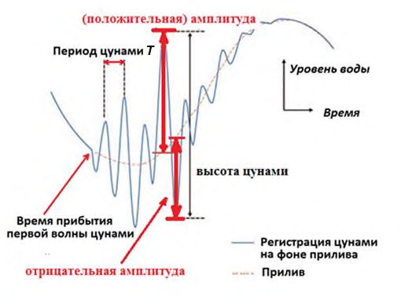
4.4.3.3 Параметрами воздействия цунами, уточненными на уровне ЦМР.
Работы по ЦМР основаны на методах и результатах математического или физического (см. приложение Е) моделирования и включают в себя модели рельефа акватории и прибрежной территории, выполняемые в соответствии с 4.2.3. Математическое моделирование подразумевает гидродинамические расчеты, рассматривающие процесс генерации цунами, трансформацию волны на акватории и при подходе к сооружениям. Расчеты следует выполнять на основе применения современных, главным образом численных, методов механики сплошных сред.
Необходимость выполнения комплекса работ по ЦМР зависит от степени расхождения фактической формы рассматриваемой бухты, очертаний береговой линии и рельефа зоны затопления от принятых в настоящем своде правил в качестве стандартных, уровня ответственности проектируемых сооружений, их класса, плотности населения на ЦОТ, эффективности местной СПЦ и других факторов. Решение по обязательности выполнения работ по ЦМР принимается в процессе проектирования специализированной организацией, которая принята и утверждена заказчиком для научно-технического сопровождения проектирования. При обоснованном отсутствии такой необходимости допускается заменять ЦМР расчетом наката, который выполняется по правилам, изложенным в разделе 6, в зависимости от способа задания опасности цунами - по величине вертикального заплеска или по высоте цунами на акватории вблизи уреза (вспомогательный материал приведен в приложении Г). В рамках процедуры расчета наката, используя в числе исходных параметров частоту сильных цунами f и осредненный по ширине зоны затопления параметр заложения уклона m , определяют дополнительный параметр цунами - скорость наката и отката цунами и устанавливают очертания линии (форма и глубина) горизонтального заплеска, в результате чего формируется зона затопления, подлежащая анализу и проектированию в целях управления цунамибезопасностью.
4.4.3.4 Количественными или качественными характеристиками цунами, сила которого описывается наблюдаемыми на побережье эффектами (последствиями) и категорируется по шкале интенсивности цунами (см. пункт 5.1.2 и приложение Г) от I ts = 0 до I ts = VI баллов включительно. Этот способ задания воздействия цунами преимущественно используется для оценочных расчетов и при разработке сценариев бедствий от цунами. При этом в необходимых случаях допускается пользоваться методикой определения параметров волн цунами в прибрежной зоне и на акватории бухты, изложенной в приложении Г и Д соответственно.
4.4.3.5 Расчетными (в том числе историческими и синтезированными) сценариями опасного воздействия, включающими в себя триггерное событие, что необходимо в тех случаях, когда этот цунамигенный триггер вызывает стихийное бедствие (ГОСТ 22.0.03) на рассматриваемой ЦОТ. Во всех иных сценарных подходах цунамигенные триггеры (ГОСТ 22.0.03) не рассматривают, а анализируют исключительно последствия цунами и вторичных по отношению к нему бедственных воздействий.
4.4.3.6 Цунами, разрушительная характеристика которого задается на основании параметров, используемых в 4.4.3.1-4.4.3.4, с помощью комплексного энергетического параметра, характеризующего поток волновой энергии. В настоящем своде правил данный энергетический параметр не рассматривается, однако он является самым перспективным и в ближайшем будущем будет эффективно использоваться в нормативных документах в области строительства и производства строительных материалов.
4.5Запрещения и ограничения строительного освоения цунамиопасных территорий
Возводить и эксплуатировать в пределах зоны затопления таких ЦОТ допускается только объекты с чисто экономической ответственностью.
Ранее созданные на таких ЦОТ и эксплуатируемые в настоящее время поселения и промышленные предприятия должны быть перенесены.
- выбирать площадки строительства, расположенные как можно выше по рельефу, с тем чтобы минимизировать риски вероятных потерь и ущербов, соблюдая в любом случае требования 5.4.5;
- технически и экономически обоснованное предварительное проектное решение включать в задание на проектирование, утверждаемое заказчиком;
- проектирование объекта осуществлять при научно-техническом сопровождении специализированной организацией.
Для зданий (сооружений) отнесенных к объектам и сетям ЖОН ЧС, дополнительно следует проводить оценку их эксплуатационной пригодности. При этом уровень требуемой эксплуатационной пригодности (надежности), снижение которого неприемлемо, задается заказчиком по рекомендации специализированной научно-исследовательской организации, обеспечивающей научное сопровождение проектирования.
Контролируемым критерием цунамибезопасности застройки ЦОТ и урбанизированной территории в целом является допускаемое значение риска, связанного с сохранением жизни и здоровья людей, что является важнейшей компонентой механической безопасности.
5Классификация цунамиопасных территорий и особенности проектирования зданий и сооружений
5.1Классификация цунамиопасных побережий
А - территории, где возможно появление только далеких цунами (например, Приморский край);
Б - территории, где возможно появление близких цунами (например, Черноморское и Каспийское побережья);
В - территории, где возможны как далекие, так и близкие цунами (например, Курильские острова и Камчатка).
СП 292.1325800.2017 вертикального заплеска. В зависимости от очертания береговой линии (бухты, залива) ЦОТ могут иметь расположение, способствующее наращиванию (эскалации) или ослаблению (деградации) эффекта цунами.
Кроме того, важно учитывать частотно-избирательные свойства акваторий, прилегающих к ЦОТ. Для строительства портов в цунамиопасных районах побережий следует выбирать бухты, собственные периоды которых либо не попадают в диапазон периодов, характерных для цунами, либо, если попадают, характеризуются низкими добротностями (большим затуханием). Например, узкий вход в бухту не является сам по себе защитой от цунами.
Также ЦОТ могут подразделяться на защищенные (рифами, малыми островами, лесопосадками) и незащищенные, благоприятные с точки зрения наличия горного рельефа в близкой доступности от берега (что помогает людям быстро эвакуироваться в безопасные места) и неблагоприятные в разной степени для эвакуации. При этом важна также плотность населения на ЦОТ.
Некоторые приближенные подходы и оценочные решения представлены в приложении Д.
5.2Классификация прибрежных сооружений
Заказчик проектной документации ГТС вправе своим решением повысить класс сооружения по сравнению с указанным в СП 58.13330.2012 (приложение Б).
5.3Классификация береговых сооружений
I - объекты повышенной ответственности, в том числе:
Iа - особо опасные объекты в соответствии с [2],
Iб - технически сложные объекты в соответствии с [2],
Iв - уникальные объекты в соответствии с [2],
Iг - дополнительные объекты, бесперебойное функционирование которых необходимо для ликвидации ЧС;
II - объекты, эвакуация из которых затруднена, в том числе:
IIа - здания, экстренная эвакуация людей из которых существенно затруднена и с высокой степенью вероятности не будет проведена до подхода цунами (эвакуация неходячих и нетранспортабельных больных, МГН),
IIб - здания и сооружения с массовым пребывания людей, отнесенные к пунктам Б.3-Б.6, Б.8-Б.10 приложения Б ГОСТ 27751-2014, а также жилые здания выше девяти этажей, нуждающиеся в вертикальной эвакуации;
III - сооружения, повреждение или разрушение которых приводит к безвозвратному экологическому ущербу и (или) угрозе эпидемии;
IV - здания и сооружения, отнесенные к классу КС-1 по ГОСТ 27751-2014 (приложение А).
V - здания обычной ответственности, не указанные выше.
Примечания
1 Категория сооружения устанавливается заказчиком по ГОСТ 27751-2014 (пункт 10.2).
2 Для зданий и сооружений класса КС-3, включенных в группу I, следует предусматривать научно-техническое сопровождение при проектировании, изготовлении и монтаже конструкций, а также их технический мониторинг при возведении и эксплуатации.
5.4Расчетные подходы к объектам цунами-риска
Моделирование осуществляют наложением упрощенных моделей сооружений (форма, размеры и ориентация) на ИЦММ, а расчет взаимодействия потока сооружениями реализуется с учетом волновой дифракции с помощью программных комплексов.
- расположением сооружений на удаленных от берега и (или) защищенных от воздействия цунами площадках;
- объемно-планировочными решениями, позволяющими достигнуть максимальной обтекаемости и необходимой проницаемости нижних этажей зданий для потока цунами;
- прочностью и устойчивостью сооружения в целом, отдельных несущих конструкций и ненесущих элементов, что проверяется расчетом по предельному состоянию первой и (при необходимости) второй группы;
- нерасчетными конструктивными мероприятиями, а также выбором строительных материалов, повышающими структурную прочность и устойчивость сооружений, а также обеспечивающими максимальную обтекаемость сооружения потока цунами;
- предотвращением прогрессирующего обрушения береговых сооружений;
- уменьшением воздействия цунами на строительные сооружения с помощью внешних защитных мероприятий;
- снижением воздействия и нагрузок на береговые здания и сооружения при увеличении общей водопроницаемости застройки на пути прохождения потока цунами;
- мерами, предупреждающими воздействие цунами с вредоносными обломками.
Результаты расчета должны удовлетворять соответствующим требованиям надежности, при которых обеспечиваются требования заказчика по сохранению эксплуатационной пригодности сооружения, соответствующие исправному, работоспособному или ограниченно работоспособному эксплуатационному состоянию сооружения.
Эта группа расчетов по второй группе предельных состояний связана прежде всего с расчетами оснований фундаментов зданий и сооружений, подвергаемых воздействию цунами, которые следует проводить с учетом взаимодействия в системе «сооружение - грунт» (СП 23.13330 и СП 22.13330). При этом необходимо обращать специальное внимание на расчетные ситуации, связанные с нарушениями структуры и свойств грунтов основания фундаментов сооружений из-за суффозии, размыва и подмыва, разжижения грунта и других негативных процессов, вызываемых накатом и откатом волн цунами.
Критическим состоянием здания является такое его состояние, при котором полученные повреждения оцениваются степенью 3.
Параметры механической безопасности при воздействии цунами, характеризующие допустимые потери государственной собственности
(экономический ущерб -w ), находящейся на ЦОТ субъекта Российской Федерации, определяются в процентах ВВП данного субъекта Российской Федерации, созданного в течении года до рассматриваемого цунами, что утверждается заказчиком по представлению проектировщика в задании на проектирование. Величина допустимых потерь негосударственной собственности устанавливается владельцем этой собственности.
АРС 1 - накат волны цунами, не содержащей вредоносных обломков (обязательна для расчетного анализа);
АРС-2 - откат волны цунами, не содержащей вредоносных обломков, с размывом донного грунта у ГТС и вымывом грунта из основания береговых сооружений (обязательна для расчетного анализа);
АРС-3 -накат волны цунами, содержащей вредоносные обломки (факультативная для расчетного анализа);
АРС-4 - откат волны цунами, содержащей вредоносные обломки, с размывом донного грунта у ГТС и вымывом грунта из основания береговых сооружений (факультативная для расчетного анализа);
АРС-5 - комплексная расчетная ситуация, в которой воздействие цунами на объекты риска в виде расчетных ситуаций АРС-1 и АРС-3 следует за сейсмическим воздействием, вызвавшим это цунами.
Примечания
1 АРС-5 обязательна для рассмотрения на побережье с близкими цунами (тип Б по 5.1.3) и анализируется при научно-техническом сопровождении проектирования специализированной организацией.
2 При анализе АРС-2 и АРС-4, связанных с особенностями грунтовых оснований, при необходимости, следует рассматривать варианты этих ситуаций, указанные в 5.4.12.
Для сооружений сквозного типа (эстакады, мосты, причалы мостового типа) необходимо рассматривать вертикальную ударную нагрузку от заплеска на верхнее строение.
Примечание - При рассмотрении АРС-2 и АРС-4 рекомендуется использовать данные по оценке устойчивости грунта, подверженного гидродинамическому воздействию, приведенные в СП 38.13330.2012 (приложение В).
На территориях типа Б следует отдельно учитывать для сквозных сооружений вертикальную компоненту сейсмического воздействия.
При расчете цунамистойкости сооружений, отнесенных к классу КС-2, кроме объектов Iг по 5.3.2, допускается проводить расчет в рамках линейной теории, рассматривая поведение сооружения, как упругое.
5.5Задание воздействий и нагрузок на сооружения в особых сочетаниях, учитывающих цунами
Для объектов повышенного уровня ответственности, относящихся к группам I, II и III по 5.3.2, следует применять коэффициент надежности по ответственности сооружений γ n ≥ 1,1. В случае, когда к надежности этих объектов органами ГОЧС предъявляются требования бесперебойного функционирования в условиях ЧС, коэффициент надежности по ответственности сооружений следует принимать не менее 1,2. В каждом конкретном случае значение коэффициента надежности по ответственности сооружений назначается заказчиком по представлению проектировщика с учетом настоящего свода правил и рекомендаций организации, осуществляющей научнотехническое сопровождение проектирования.
Расчет береговых сооружений, отнесенных к группам Iб, Iв, Iг, II и III по 5.3.2, следует проводить исходя из значений вертикального заплеска h 100 , принимаемых по приложению А.
- расчет прибрежных сооружений, кроме предназначенных для ЖОН ЧС, а также береговых сооружений, кроме отнесенных к группе V по 5.3.2, проводят, исходя из значений вертикального заплеска h 100, принимаемых по приложению А;
- прибрежные сооружения, предназначенные для ЖОН ЧС, а также объекты, аварии которых могут вызвать вторичные бедствия, повышающие риск, связанный с жизнью и здоровьем людей, следует рассчитывать на воздействие цунами, исходя из значений вертикального заплеска h 50; 0,1, принимаемых по приложению А;
- береговые сооружения, отнесенные к группе V по 5.3.2, следует рассчитывать на воздействие цунами, исходя из значений вертикального заплеска h 100, принимаемых по приложению А с понижающим коэффициентом, равным 0,75.
5.6Критерии надежности и безопасности сооружений при воздействии цунами
5.7Особенности расчета мостовых сооружений при воздействии цунами
СП 292.1325800.2017 сооружения обеспечивала надежность и безопасность его опорных элементов (устоев и русловых опор), соединительных элементов и в конечном итоге пролетного строения. В любом случае при расчете отверстия моста отметка низа пролетного строения должна располагаться выше максимального расчетного заплеска с зазором не менее 0,5 м. При назначении величины зазора следует учитывать расчетные ситуации, при которых в потоке цунами находятся глыбы льда и плавающие вредоносные предметы. Потребность пропуска судов под мостовыми сооружениями при расчете их на воздействие цунами учитываться не должна.
Аэродинамический коэффициент лобового сопротивления потоку цунами допускается принимать по СП 35.13330.2011 (приложение Н).
5.8Особенности расчета и проектирования основания и фундаментов сооружений, подверженных воздействию цунами
Расчеты необходимо проводить по двум группам предельных состояний:
- по первой группе (потеря несущей способности и (или) полная непригодность сооружений, их конструкций и оснований к эксплуатации) расчеты общей прочности и устойчивости системы «сооружение - основание», общей фильтрационной прочности оснований и грунтовых сооружений, прочности отдельных элементов сооружений, разрушение которых приводит к прекращению эксплуатации сооружений; расчеты перемещений конструкций, от которых зависит прочность или устойчивость сооружений в целом, и др.;
- по второй группе (непригодность к нормальной эксплуатации) - расчеты местной, в том числе фильтрационной, прочности оснований и сооружений, перемещений и деформаций, образования или раскрытия трещин и строительных швов; расчеты прочности отдельных элементов сооружений, не относящиеся к расчетам по предельным состояниям первой группы.
- применение конструкций, обеспечивающих наиболее благоприятное направление усилий и воздействий на основание и береговые примыкания сооружения;
- анкеровку секций сооружения и береговых примыканий при наличии достаточно прочных грунтов в основании;
- инъекционное укрепление грунтов основания при достаточно развитой трещиноватости массива при отсутствии глинистого заполнителя трещин.
5.9Эксплуатационные требования к гидротехническим сооружениям, находящимся в цунамиопасной зоне
- за состоянием ограждающих устройств, превышением гребня ограждений над уровнем жидкости;
- системой перехвата и отвода дождевых и талых вод;
- противофильтрационными устройствами (экранами, стенками);
- работой контрольно-измерительной аппаратуры, отслеживающей возможность проникновения жидких отходов за пределы территорий отстойников и хранилищ.
Следует принимать меры по срочной ликвидации выявленных нарушений эксплуатации и состояния сооружений, а также по предупреждению и недопущению их в дальнейшем.
6Воздействие цунами на прибрежные территории
6.1Специфика оценки параметров цунами в прибрежной зоне и на берегу
В первом способе (по 4.4.3.1) исходными параметрами являются прогнозируемая величина заплеска hrun , которая, в зависимости от типа прогноза, равна либо h 100, либо h 50, либо h 50;0,1 или ht (приложение А), а также период волны цунами Т , частота повторяемости сильных цунами f , параметр заложения откоса m .
Во втором способе (по 4.4.3.2) исходными являются параметры подходящей волны заданной повторяемости.
hrun -прогнозируемый (заданный) вертикальный заплеск цунами (приложение А);
Т -период волны цунами (приложения А, Б); m -средний параметр заложения берегового откоса и уклона дна вблизи берега; где
СП 292.1325800.2017 g -ускорение силы тяжести.
При Br < 1 накат волн на береговой откос происходит без обрушения, при Br ≥ 1 при накате цунами происходит образование бора.
6.2Накат на берег необрушенных волн. Первый способ
где f - частота повторяемости сильных цунами (приложение А).
Рисунок 6.1 - Зависимость максимальных и минимальных относительных отклонений уровня цунами от безразмерной координаты x ~
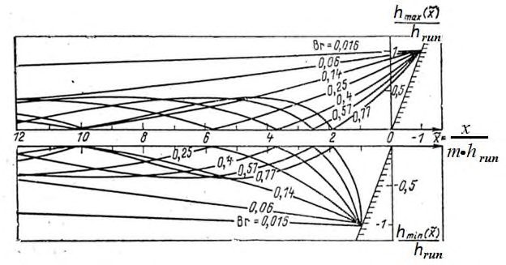
Рисунок 6.2 - Зависимость максимальной безразмерной скорости потока при цунами от безразмерной координаты x ~
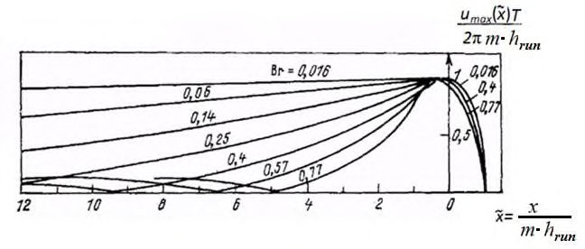
Следует отметить, что максимальное абсолютное значение скорости потока u = 2π mhrun / T достигается на подвижном урезе в мористой части на расстоянии 2 3 2 2 ) (2π gT m h x run = от берега.
6.3Накат на берег необрушенных волн. Второй способ
Значения относительной высоты наката волн d h run / при этом определяются:
- при грунтовых откосах из каменной наброски и защищенных плитами (откосы с малой шероховатостью) - в зависимости от относительной высоты подходящей волны d h d / и заложения откоса ctg φ по таблице 6.1;
- при наброске из фасонных блоков - в зависимости от относительной высоты подходящей волны d h d / и заложения откоса ctg φ по таблице 6.2.
Значение d h d / определяется в створе перед сооружением.
Таблица 6.1 Значения относительной высоты наката волн d h run /
| Относительная высота подходящей волны d h d / | Заложение откоса ctg φ | Заложение откоса ctg φ | Заложение откоса ctg φ | Заложение откоса ctg φ | Заложение откоса ctg φ | Заложение откоса ctg φ |
|---|---|---|---|---|---|---|
| Относительная высота подходящей волны d h d / | 1,0 | 2,0 | 3,0 | 4,0 | 5,0 | 6,0 |
| 0,1 | 0,141 | 0,179 | 0,221 | 0,176 | 0,179 | 0,191 |
| 0,2 | 0,318 | 0,412 | 0,562 | 0,402 | 0,411 | 0,424 |
| 0,3 | 0,467 | 0,645 | 0,888 | 0,658 | 0,670 | 0,676 |
| 0,4 | 0,650 | 0,806 | 1,142 | 0,929 | 0,947 | 0,941 |
| 0,5 | 0,848 | 1,120 | 1,515 | 1,214 | 1,238 | 1,217 |
| 0,6 | 1,159 | 1,415 | 1,657 | 1,509 | 1,541 | 1,501 |
| 0,7 | 1,555 | 1,666 | 1,767 | 1,652 | 1,685 | 1,792 |
| 0,8 | 1,753 | 1,773 | 2,130 | 2,129 | 2,173 | 2,089 |
Окончание таблицы 6.1
| Относительная высота | Относительная высота | Заложение откоса ctg φ | Заложение откоса ctg φ | Заложение откоса ctg φ | Заложение откоса ctg φ | Заложение откоса ctg φ | Заложение откоса ctg φ |
|---|---|---|---|---|---|---|---|
| подходящей волны | d h d / | 7,0 | 8,0 | 9,0 | 10,0 | 11,0 | 12,0 |
| 0,1 | 0,199 | 0,225 | 0,264 | 0,301 | 0,403 | 0,522 | |
| 0,2 | 0,426 | 0,450 | 0,493 | 0,524 | 0,632 | 0,738 | |
| 0,3 | 0,665 | 0,675 | 0,711 | 0,725 | 0,823 | 0,904 | |
| 0,4 | 0,912 | 0,900 | 0,921 | 0,913 | 0,992 | 1,044 | |
| 0,5 | 1,166 | 1,125 | 1,125 | 1,091 | 1,092 | 1,168 | |
| 0,6 | 1,425 | 1,350 | 1,326 | 1,263 | 1,291 | 1,278 | |
| 0,7 | 1,689 | 1,575 | 1,523 | 1,428 | 1,428 | 1,380 | |
| 0,8 | 1,956 | 1,800 | 1,718 | 1,589 | 1,557 | 1,476 |
Таблица 6.2 Значения относительной высоты наката волн d h run /
| Относительная высота подходящей волны d h d / | Заложение откоса ctg φ | Заложение откоса ctg φ | Заложение откоса ctg φ | Заложение откоса ctg φ | Заложение откоса ctg φ | Заложение откоса ctg φ |
|---|---|---|---|---|---|---|
| Относительная высота подходящей волны d h d / | 1,0 | 2,0 | 3,0 | 4,0 | 5,0 | 6,0 |
| 0,1 | 0,106 | 0,090 | 0,079 | 0,064 | 0,056 | 0,072 |
| 0,2 | 0,255 | 0,336 | 0,281 | 0,229 | 0,202 | 0,161 |
| 0,3 | 0,375 | 0,528 | 0,363 | 0,297 | 0,262 | 0,256 |
| 0,4 | 0,573 | 0,640 | 0,565 | 0,461 | 0,408 | 0,356 |
| 0,5 | 0,764 | 0,743 | 0,720 | 0,589 | 0,519 | 0,461 |
| 0,6 | 1,004 | 0,896 | 0,748 | 0,612 | 0,539 | 0,569 |
| 0,7 | 1,181 | 0,958 | 0,821 | 0,673 | 0,593 | 0,679 |
| 0,8 | 1,577 | 1,222 | 1,051 | 0,859 | 0,757 | 0,791 |
Окончание таблицы 6.2
| Относительная высота d h / | Заложение откоса ctg φ | Заложение откоса ctg φ | Заложение откоса ctg φ | Заложение откоса ctg φ | Заложение откоса ctg φ | Заложение откоса ctg φ |
|---|---|---|---|---|---|---|
| подходящей волны d | 7,0 | 8,0 | 9,0 | 10,0 | 11,0 | 12,0 |
| 0,1 | 0,075 | 0,084 | 0,098 | 0,111 | 0,149 | 0,191 |
| 0,2 | 0,160 | 0,168 | 0,183 | 0,193 | 0,232 | 0,270 |
| 0,3 | 0,250 | 0,252 | 0,263 | 0,268 | 0,303 | 0,331 |
|---|---|---|---|---|---|---|
| 0,4 | 0,343 | 0,336 | 0,341 | 0,337 | 0,365 | 0,382 |
| 0,5 | 0,438 | 0,420 | 0,417 | 0,403 | 0,422 | 0,428 |
| 0,6 | 0,536 | 0,504 | 0,491 | 0,466 | 0,475 | 0,468 |
| 0,7 | 0,635 | 0,588 | 0,564 | 0,527 | 0,525 | 0,505 |
| 0,8 | 0,735 | 0,672 | 0,636 | 0,586 | 0,572 | 0,541 |
где x -горизонтальная координата рассматриваемой точки, отсчитываемая от уреза, м; max h -высота волны на урезе, определяемая по графику на рисунке 6.3.
Рисунок 6.3 - График для определения вертикального заплеска
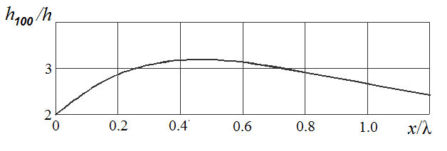
где z -высота рассматриваемой точки на берегу над расчетным уровнем, м.
При длине откоса 0,4λ L накат на откос проходит без обрушения.
Рисунок 6.4 - График для определения максимальной скорости на урезе при накате волны
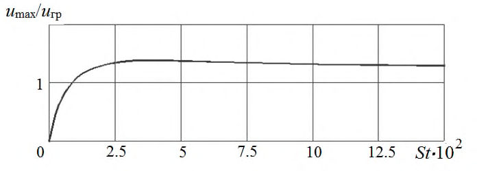
Рисунок 6.5 - График для определения максимальной скорости на урезе при откате волны
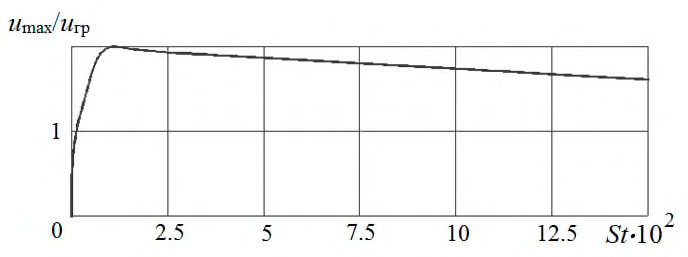
Значение осредненной по глубине горизонтальной скорости потока под гребнем необрушенной волны u гр, м/с, следует определять по формуле
где h -высота исходной волны, м; η -возвышение поверхности воды, м; d -глубина воды от невозмущенной поверхности, м.
где п k -величина, определяемая по графику на рисунке 6.6.
Рисунок 6.6 - График для определения времени подхода волны к берегу
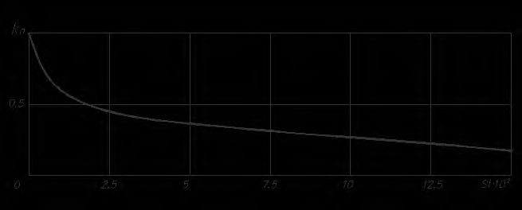
где k з -величина, определяемая по графику на рисунке 6.7.
Рисунок 6.7 - График для определения времени затопления
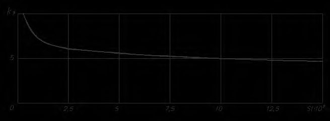
6.4Накат на берег бора
начинается формирование бора. Глубина воды в этом месте обозначается кр d . Величину кр * η d = следует рассматривать как исходную высоту бора.
где d -местная глубина воды.
Длину волны на критической глубине определяют по формуле
При распространении бора от точки ( /4 кр = х ) до исходного уреза воды его высота остается неизменной, то есть
Если критическая глубина находится на расстоянии ( /4 λ кр х ), то на всем этом участке высота бора равна
Массовую скорость потока за фронтом бора u , м/с, в зоне до уреза воды определяют по формуле
Формулы (6.16) и (6.17) применимы при / 4 / 4 λ кр b х h d = .
ур h - высота бора на урезе воды, определяемая равенствами (6.14), (6.15). где
где s -коэффициент, определяемый по графику на рисунке 6.8.
где t ν -коэффициент, определяемый по графику на рисунке 6.8.
Рисунок 6.8 - Зависимость отношения t s , от уклона берега
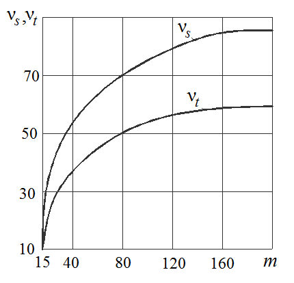
7Воздействие цунами на гидротехнические сооружения
7.1Нагрузки на необтекаемые сооружения
где h -высота волны, м, на входе в акваторию.
где kс -коэффициент, принимаемый по графику на рисунке 7.1.
Рисунок 7.1 - Графики значений коэффициентов kc , kf
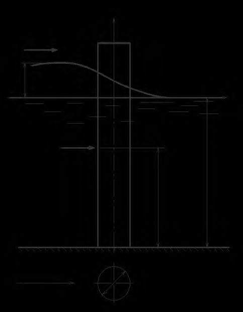
где ρ - плотность воды, т/м³ ; kf - коэффициент, принимаемый по графику на рисунке 7.1.
Точки приложения нагрузок xc P , zc P находятся по центру тяжести эпюры.
где q , σ -параметры, определяемые по таблице 7.1 в зависимости от заложения откоса m .
Рисунок 7.2 - Эпюра давления гравитационной волны на вертикальную стенку
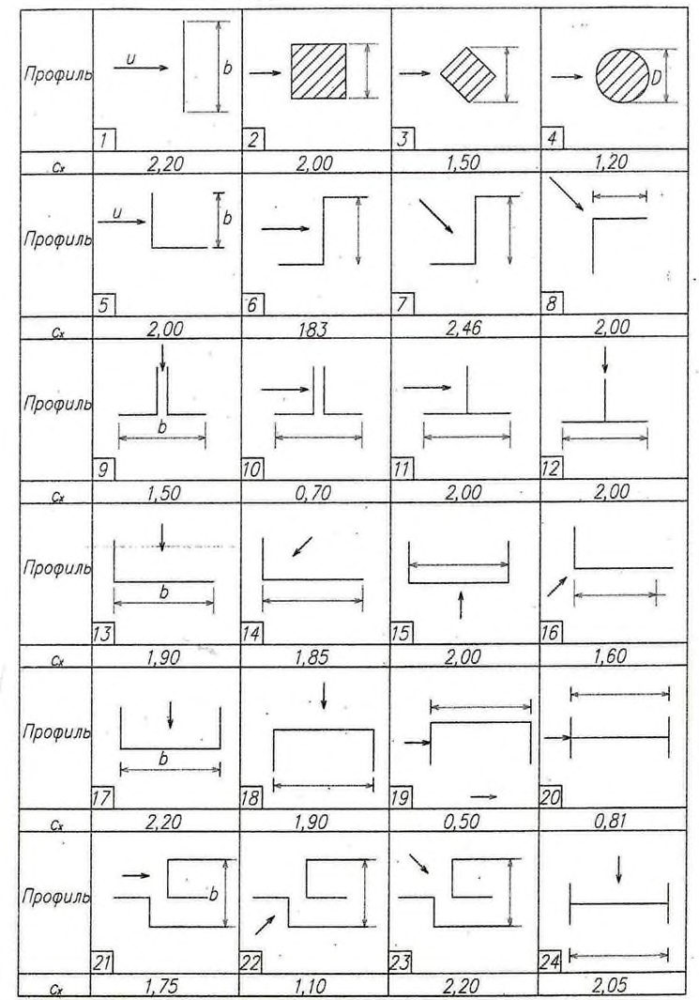
Таблица 7.1 Значения параметров σ, q и δ
| m | h/d | h/d | 0,1 | 0,2 | 0,3 | 0,4 | 0,5 | 0,6 | 0,7 | 0,8 | 0,9 |
|---|---|---|---|---|---|---|---|---|---|---|---|
| m | δ | δ | 0,801 | 0,951 | 1,046 | 1,114 | 1,167 | 1,210 | 1,245 | 1,275 | 1,300 |
| σ | z = 0 | 0,697 | 0,698 | 0,701 | 0,703 | 0,705 | 0,709 | 0,710 | 0,713 | 0,713 | |
| z = d | 0,055 | 0,055 | 0,055 | 0,055 | 0,055 | 0,055 | 0,055 | 0,055 | 0,055 | ||
| q | q | 1,972 | 1,855 | 1,776 | 1,714 | 1,669 | 1,631 | 1,599 | 1,571 | 1,547 | |
| σ | z = 0 | 0,693 | 0,685 | 0,660 | 0,648 | 0,641 | 0,640 | 0,636 | 0,638 | 0,635 | |
| z = d | 0,200 | 0,200 | 0,200 | 0,200 | 0,200 | 0,200 | 0,200 | 0,200 | 0,200 | ||
| q | q | 1,641 | 1,407 | 1,249 | 1,130 | 1,036 | 0,959 | 0,894 | 0,840 | 0,792 | |
| σ | z = 0 | 0,676 | 0,626 | 0,581 | 0,544 | 0,515 | 0,502 | 0,498 | 0,496 | 0,494 | |
| z = d | 0,279 | 0,279 | 0,279 | 0,279 | 0,279 | 0,279 | 0,279 | 0,279 | 0,279 | ||
| q | q | 1,310 | 0,960 | 0,721 | 0,543 | 0,402 | 0,259 | 0,190 | 0,108 | 0,039 | |
| σ | z = 0 | 0,652 | 0,577 | 0,515 | 0,461 | 0,435 | 0,418 | 0,377 | 0,360 | 0,344 | |
| z = d | 0,361 | 0,361 | 0,361 | 0,361 | 0,361 | 0,361 | 0,361 | 0,361 | 0,361 | ||
| q | q | 0,979 | 0,511 | 0,194 | -0,043 | -0,231 | -0,385 | -0,514 | -0,624 | -0,718 | |
| σ | z = 0 | 0,618 | 0,517 | 0,415 | 0,321 | 0,218 | 0,107 | 0,010 | -0,131 | 0,268 | |
| z = d | 0,409 | 0,409 | 0,409 | 0,409 | 0,409 | 0,409 | 0,409 | 0,409 | 0,409 | ||
| q | q | 0,648 | 0,063 | -0,333 | -0,630 | -0,865 | -1,057 | -1,218 | -1,355 | -1,473 |
d - глубина воды на входе в акваторию; ρ - плотность воды, т/м³ ; g - ускорение силы тяжести, м/с 2 ; f - параметр, определяемый по таблице 7.1.
7.2Нагрузки на обтекаемые и сквозные сооружения
где где -коэффициент лобового сопротивления преграды, принимаемый по таблице 7.2; x c u -скорость волнового потока, м/с, определяемая по формуле ; ) ( d g h u + =
S 0 -смоченная (подводная) площадь миделева сечения сооружения, м² . Схема нагрузки на цилиндрическую опору показана на рисунке 7.3.
Рисунок 7.3 - Схема к расчету нагрузок на вертикальную цилиндрическую опору
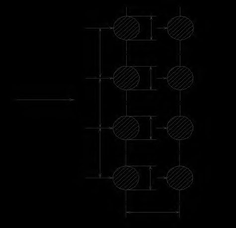
Таблица 7.2 Значения коэффициента cx для элементов стержневого типа
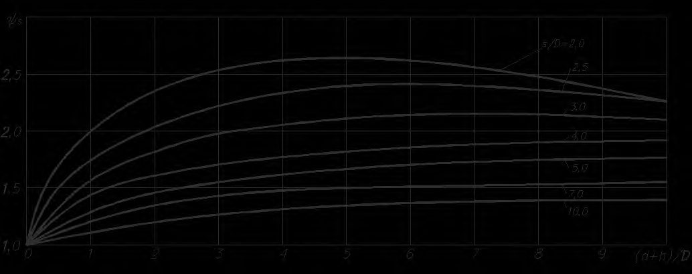
Q -нагрузка на одиночную опору, определяемая по формуле (7.10); l -коэффициент сближения опор по лучу волны, определяемый по таблице 7.3; s ψ -коэффициент сближения опор по фронту волны, определяемый по графикам на рисунке 7.5.
Таблица 7.3 Значения коэффициента ψ1
| l/D | Больше 3 | 3 | 2 |
|---|---|---|---|
| l | 1,0 | 0,9 | 0,8 |
Рисунок 7.4 - Схема к расчету нагрузок на одну из группы опор сквозного сооружения
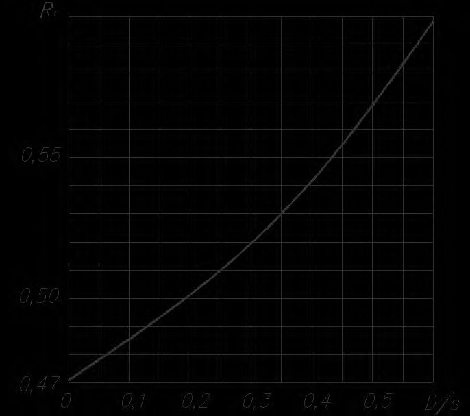
где
Рисунок 7.5 - Графики для определения коэффициента сближения опор ψs по фронту волны
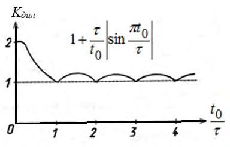
где -коэффициент, значение которого принимается по графику на рисунке 7.6; для обтекаемого сооружения =0,47. 1 R 1 R
Рисунок 7.6 - График для определения коэффициента R 1
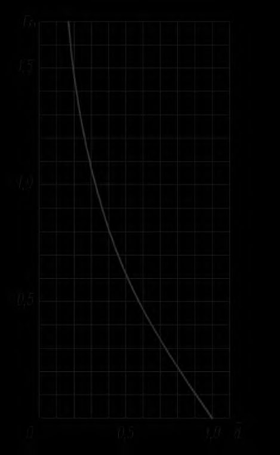
где Qi - нагрузка на i -й элемент опоры, определяемая по формуле (7.10).
𝑄
где S - площадь верхнего строения.
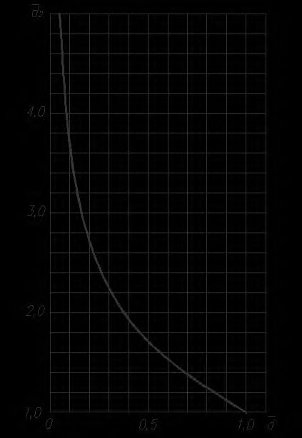
τ - период собственных колебаний сооружения; - время его обтекания: = L / u , где u - массовая скорость волны, L - продольный размер сооружения (размер в направлении движения волны) 0 t 0 t
Рисунок 7.7 - График для определения коэффициента динамичности К дин силы Q
8Воздействие бора на гидротехнические сооружения
8.1Нагрузки на необтекаемые сооружения
Стадия взаимодействия фронта бора с сооружением может быть разделена на две фазы - фазу удара и фазу отражения. Степень поражения объекта оценивается по наибольшему из значений нагрузок, определяемых для этих фаз.
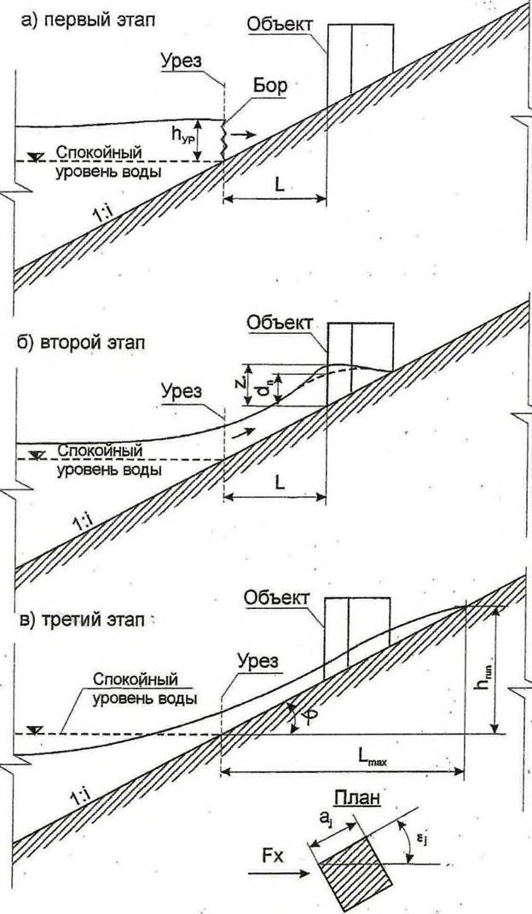
Рисунок 8.1 - Схема к определению параметров бора в фазе удара
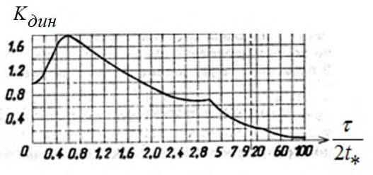
P - горизонтальная составляющая сила водного потока
Рисунок 8.2 - Схема взаимодействия бора в фазе удара с оградительным сооружением где
Рисунок 8.3 - Схема взаимодействия бора в фазе удара с причальным сооружением
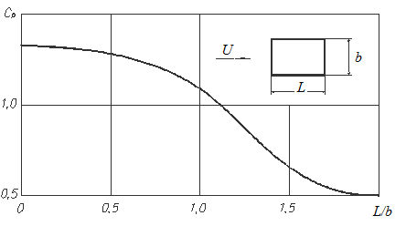
Длительность фазы t уд, с, следует определять по формуле
- число Фруда, определяемое по формуле 1 Fr
1 d -глубина воды в боре при накате, определяемая по формуле
здесь 1 С -скорость фронта бора, определяемая по формуле (6.14).
Значение 1 Fr может быть получено также по графику на рисунке 8.4.
Рисунок 8.4 - График для определения величины Fr 1
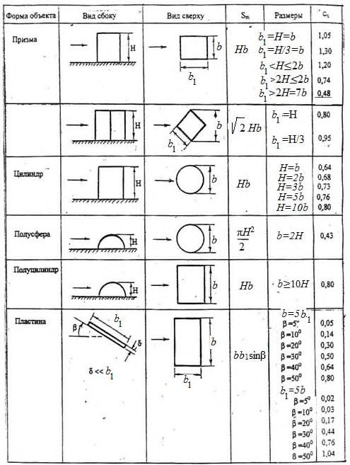
Суммарную нагрузку Р 0, кН/м, действующая на лобовую грань сооружения, определяют по формуле
где - высота эпюры давления, * d
Точка приложения нагрузки Р 0, как и распределение этой нагрузки по высоте сооружения, определяется эпюрой давления. При построении эпюры давления на лобовую грань давление у основания сооружения p н, кПа, следует определять по формуле
Давление p в, кПа, на высоте * d от дна определяют по формуле
Давление на тыльную сторону оградительного сооружения следует определять по формуле
где z -вертикальная координата (рисунок 8.1).
Соответственно, удельную нагрузку на тыльную сторону сооружения Р , кН/м, определяют по формуле
Давление над верхом сооружения принимают равным атмосферному.
Давление по подошве сооружения имеет трапецеидальную эпюру, построенную по давлениям на лобовой и тыльной сторонах сооружения.
где b - ширина сооружения по фронту бора, м; - скорость фронта отраженного бора, м/с; глубина воды в отраженном боре, м.
- 2 d
2 2 gd С =
При > H , где H - высота сооружения, м, над дном, отражение бора сопровождается переливом жидкости через сооружение. Значение зависит от формы и размеров сооружения. 2 d 2 d
При отсутствии перелива ( d 2 H ) значение d 2 определяют с помощью графика на рисунке 8.6, где , . 1 2 2 / d d d = 1 / d d d =
Расчетные схемы воздействия бора на оградительное и причальное сооружения в фазе отражения при >H приведены на рисунках 8.7, 8.8. 2 d
Рисунок 8.5 - Схема к определению параметров бора в фазе отражения при d 2 ≤ H
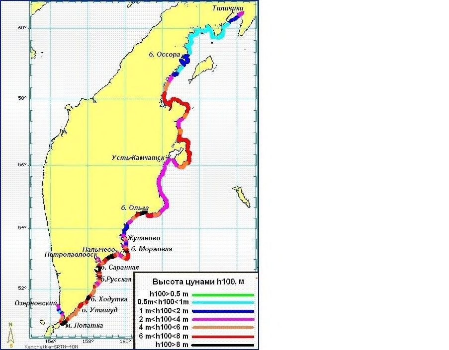
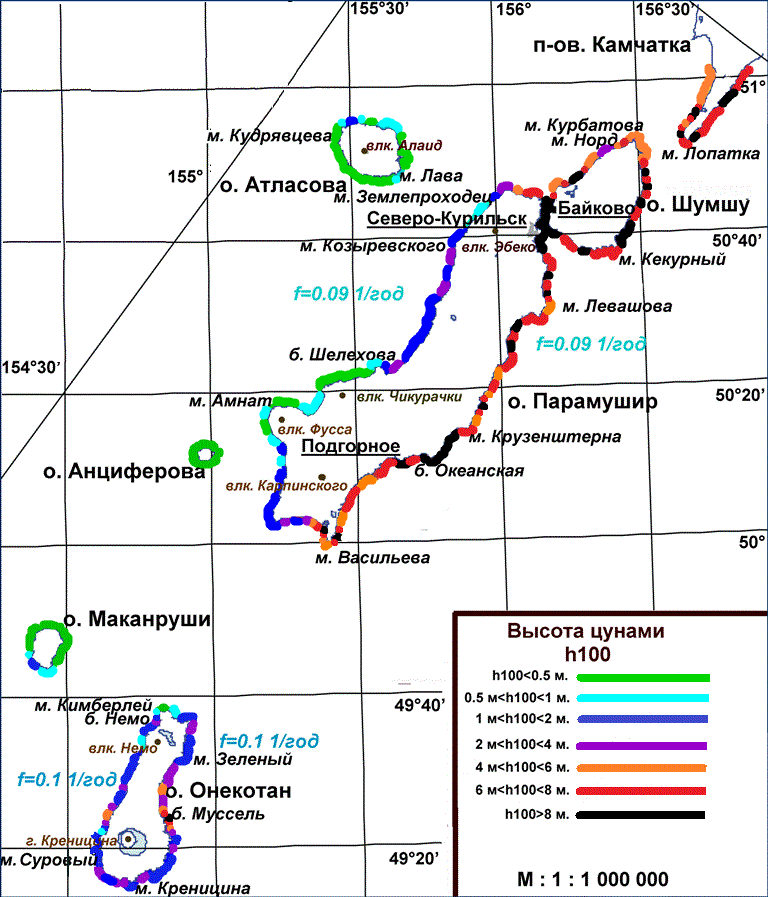
Рисунок 8.6 - Схема определения глубины воды d 2 в отраженном боре
Рисунок 8.7 - Схема взаимодействия бора в фазе отражения с оградительным сооружением, d 2 > H
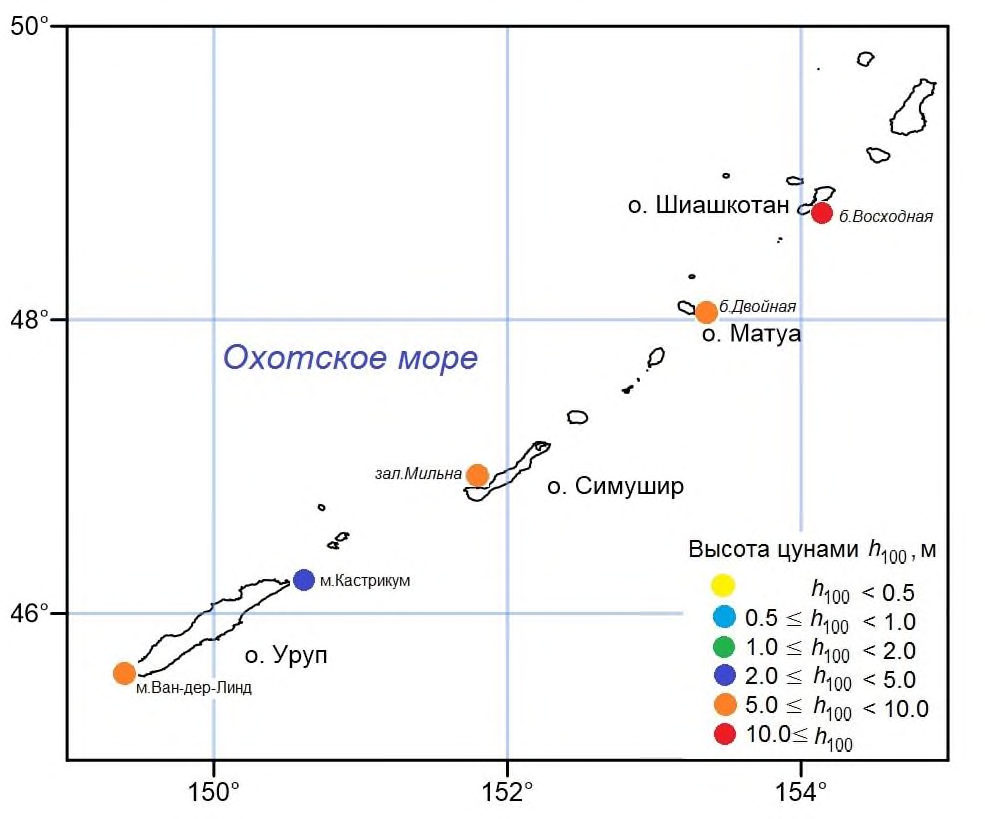
Рисунок 8.8 - Схема взаимодействия бора в фазе отражения с причальным сооружением, d 2 > H
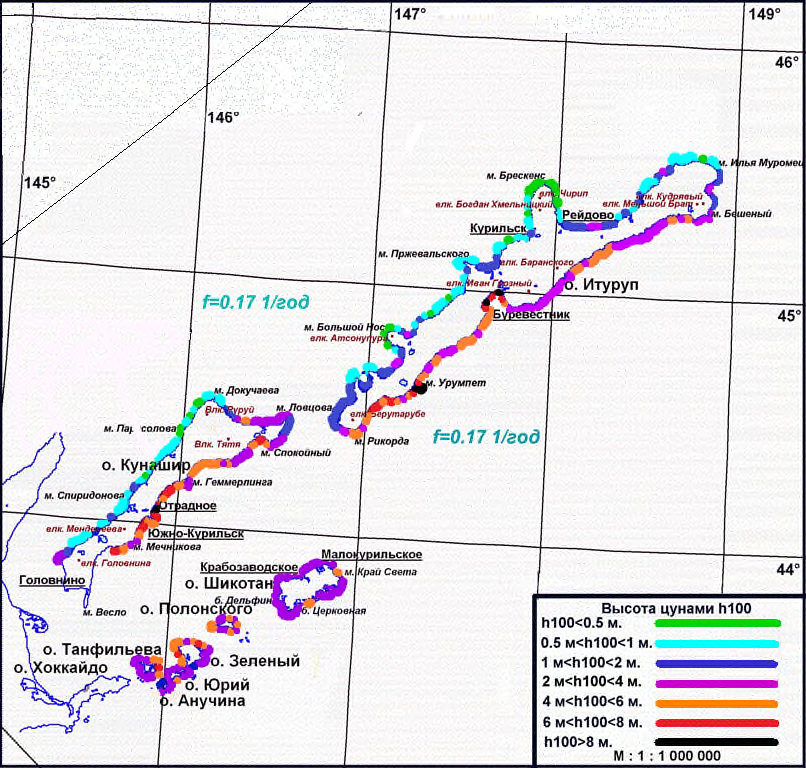
В случае относительно узких (по лучу волны) оградительных сооружений ( 2 b < 2 d - H) удельную нагрузку Р , кН/м, на лобовую грань сооружения определяют по формуле
Значения 2 d и определяют также по значениям и H по графикам на рисунке 8.9, как координаты точки пересечения соответствующих кривых. 2 Fr d
При построении эпюры давления на лобовую грань (см. рисунок 8.7) давление у основания сооружения p н, кПа, следует определять по формуле
Высоту эпюры давления определяют из соотношения * d
Давление в верхней части эпюры p в, кПа, следует определять по формуле (8.7).
Нагрузку на остальные грани сооружения определяют так же, как и в фазе удара.
В случае относительно широких (по лучу волны) оградительных и причальных сооружений (b > 2 ( - H)) удельную нагрузку на лобовую грань Р , кН/м, определяют по формуле 2 d
Значения 2 d и определяют по графикам на рисунке 8.10, значение η может быть определено также по графику на рисунке 8.11. 2 Fr где где
Рисунок 8.9 - Графики для определения значений и в случае 2 b < (d 2 - H) 2 Fr 2 d
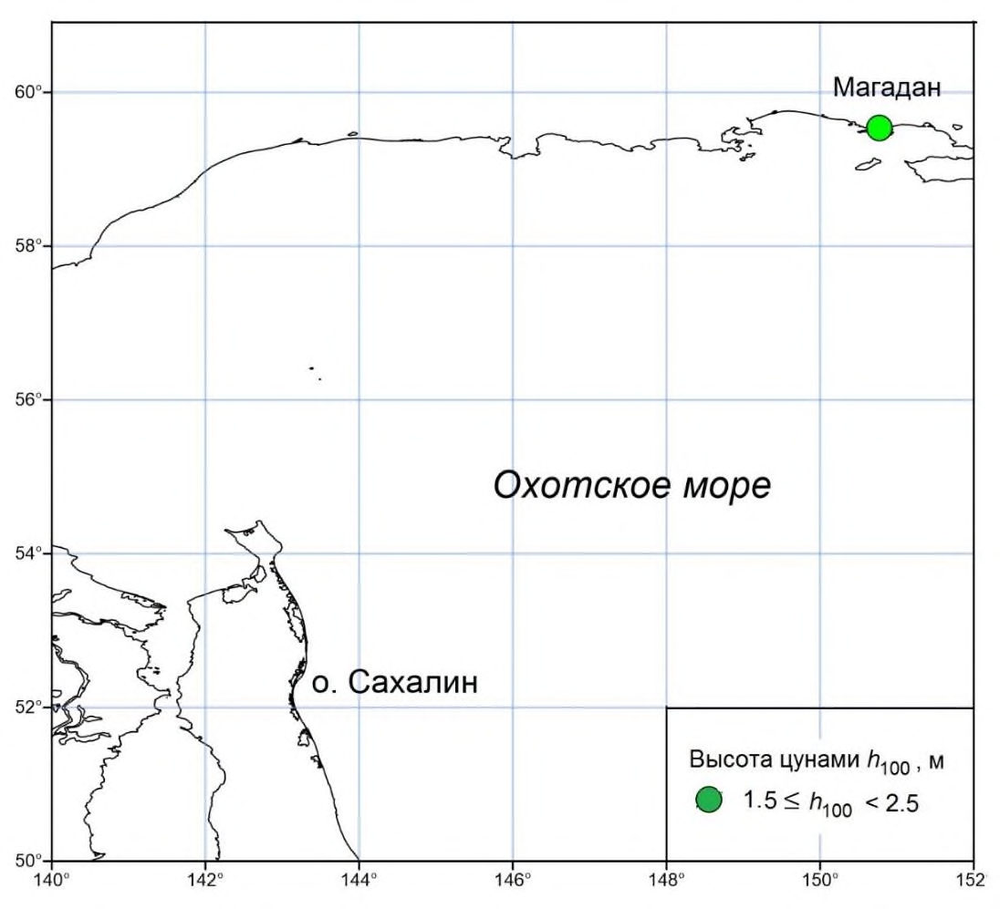
Рисунок 8.10 - Графики для определения значений 2 Fr и 2 d в случае b > 2 (d 2 - H)
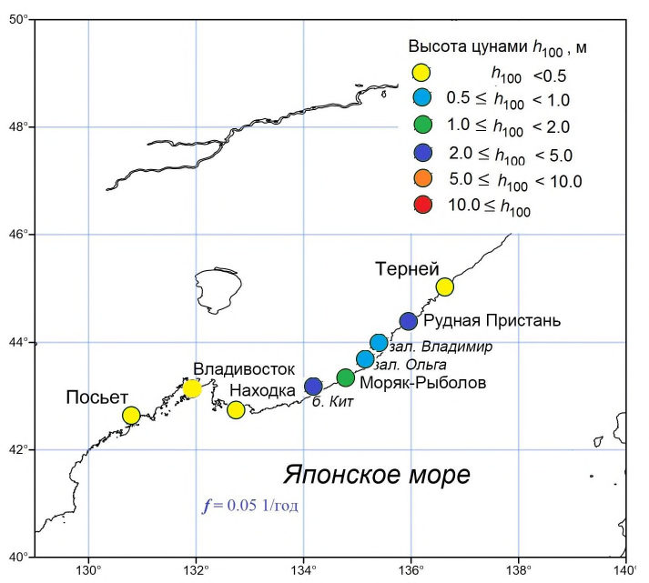
где
Рисунок 8.11 - График для определения значения η
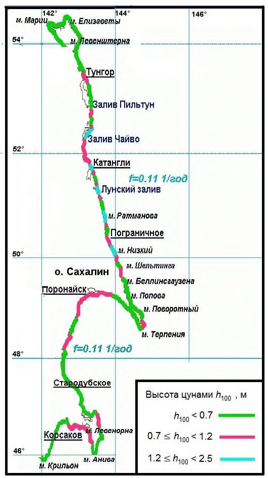
Значения давления для построения эпюры на лобовой и тыльной сторонах сооружения и по его подошве следует определять так же, как и для относительно узких (по лучу волны) оградительных сооружений.
Давление по верху сооружения р , кПа, следует определять по формуле
где глубина потока в прикордонной зоне 3 d
Если глубина воды в отраженном боре d 2, определенная по графикам на рисунке 8.9 и обозначенная , удовлетворяет неравенству b < 2( -H ), а найденная по графикам на рисунке 8.10 и обозначенная - неравенству b > ( -H)/ 2, то любую нагрузку (или давление) вычисляют по интерполяционной формуле 2 d 2 d 2 d 2 d P
1 P -значение нагрузки для сооружений размером ( ) H d b -= 2 1 2 ;
2 P -значение нагрузки для сооружений размером ( ) H d b -= 2 2 0,5 ;
-параметр, определяемый по формуле
Если сооружение установлено на постели, то расчеты проводят, как для сооружения полной высоты. Затем эпюру обрезают на уровне основания сооружения (по верху постели).
8.2Нагрузки на обтекаемые и сквозные сооружения
Рисунок 8.12 - Схема взаимодействия бора со сквозным сооружением
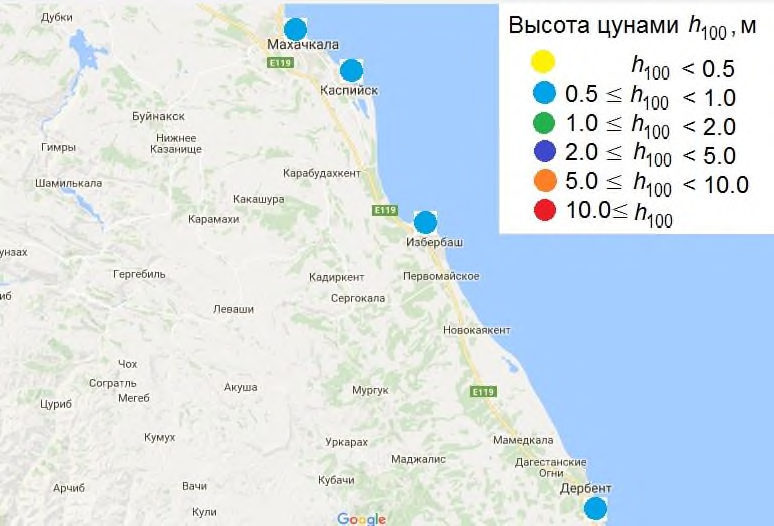
Значение Fr 1 определяют по формуле (8.2) или по графику на рисунке 8.4. м, действующий на обтекаемое
8.3Нагрузки на отдельные элементы гидротехнических сооружений
cx -коэффициент лобового сопротивления;
S 0 -площадь проекции рассматриваемого элемента на плоскость, перпендикулярную направлению движения потока (миделево сечение);
1 u -скорость потока, определяемая по формуле (8.23).
где D* -наименьший размер бетонного массива или диаметр камня, м; k ρ -отношение плотностей воды и материала наброски; k -коэффициент, зависящий от формы и характера поверхности элемента наброски, а также от положения его точек опоры. При хорошо уплотненной наброске k = 0,75c/cos φ. Здесь с -коэффициент обтекания элемента наброски (допускается приближенно принимать с = 1,0); φ - угол наклона откоса к горизонту.
9Воздействие бора на береговые объекты
9.1Воздействие бора в стадии удара
Примечание - Схема воздействия бора на береговой объект приведена на рисунке 9.1.
где где где
С 1 -скорость наката фронта бора на берег, м/с, определяемая по 9.1.2; μ -безразмерный параметр, определяемый по формуле
при размерном коэффициенте шероховатости откоса n , с/м 1/3 , равном 0,04 с/м 1/3 (отсутствие растительности), 0,067 с/м 1/3 (заросший откос) и 0,08 с/м 1/3 (нагромождение камней, валунов);
- z * -координата подъема уровня воды, м, на лобовой грани
* t -длительность, с, воздействия фронта бора на береговой объект
j ε -угол между направлением распространения фронта бора, вкатывающегося на берег, и j -й лобовой гранью сооружения; zp -координата точки определения давления, отсчитываемая от основания сооружения, м.
При z > 1 μ C t в формуле (9.1) последний член принимают равным нулю.
б k -коэффициент, равный 2,0 для незастроенного и 1,82 для застроенного участка побережья; п d -глубина потока у сооружения, м, определяемая по формуле
здесь ур h - высота бора на урезе воды, определяемая по формулам (6.12), (6.13). При определении высоты бора на урезе воды по формулам (6.12) и (6.13) h ур принимают равной h б ; run h - высота вкатывания бора на берег, равная tg max L , определяется по указаниям 6.3 относительно величины max L . При определении высоты вкатывания бора на берег по указаниям 6.3 L max принимают равной L .
Рисунок 9.1 - Схема воздействия бора на береговой объект
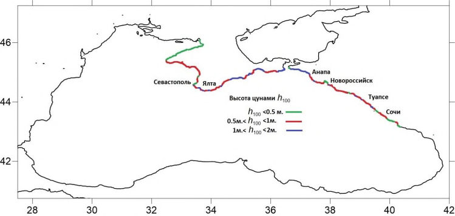
где К -коэффициент проницаемости j -й грани сооружения. пр
где дин K -коэффициент динамичности, определяемый по графику на рисунке 9.2; j a -длина j -й лобовой грани, м.
* t - время действия фронта бора, которое определяется по формуле (9.4); τ - период собственных колебаний сооружения
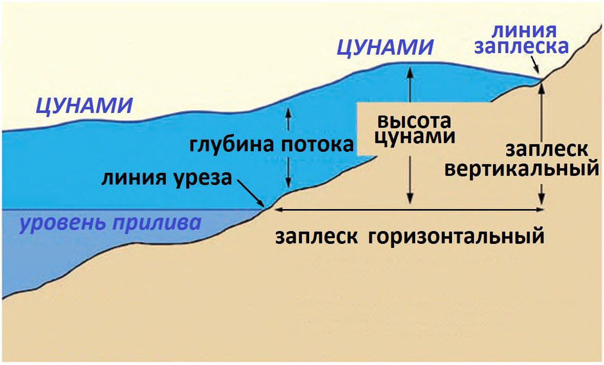
Рисунок 9.2 - График для определения коэффициента динамичности
9.2Нагрузки в стадии квазистационарного обтекания
9.2.1 Нагрузки на непроницаемые объекты
Оценку силы j F , кН, действующей на j -й стержневой элемент проницаемого сооружения в направлении набегающего потока в стадии квазистационарного обтекания, проводят по формуле
где x с -коэффициент лобового сопротивления элемента, принимаемый по таблицам 7.2 и 9.1; x u -горизонтальная проекция скорости потока;
S 0 ,j -смоченная (подводная) площадь миделева сечения j -го стержневого элемента сооружения, м² ; j χ -угол между направлением потока и осью элемента, град.
Смещающую силу x F , кН, действующую на проницаемое сооружение, определяют путем суммирования сил, действующих на его элементы:
Опрокидывающий момент, действующий на проницаемое сооружение, определяют по формуле
где j h -высота точки приложения силы j F , м.
9.2.2 Нагрузки на плохо проницаемые объекты
В стадии квазистационарного обтекания нагрузки на плохо проницаемые объекты определяются в зависимости от отношений характерных размеров сооружения (ширины В и высоты H ) к глубине потока воды d , обтекающего сооружение.
При B < 0,2 d или H < 0,5 d можно пренебрегать деформацией свободной поверхности потока. Смещающую силу x F , кН, действующую на сооружение, следует определять по формуле
где x c -коэффициент лобового сопротивления, принимаемый по таблице 7.2, сечения 1-4 при H >d, или по таблице 9.1 при H < d ;
S 0 -смоченная площадь миделева сечения объекта, м² ; пр k -доля сплошной части стен.
Давление р , кПа, на лобовой грани сооружения следует определять по формуле
Давление на остальных гранях сооружения определяют по формуле (9.14) при u = 0.
При B > 0,2 d или H > 0,5 d для оценки нагрузок необходимо учитывать изменение глубины потока у сооружения за счет деформации свободной поверхности преградой.
Глубину воды к d , м, у контура сооружения определяют по формуле
где gd u Fr / = ; u - скорость потока; p c - безразмерный коэффициент.
Значение p c изменяется по контуру сооружения в плане. На тыльной части контура (кроме кругового) при L/B 2 значение коэффициента p c = -0,5. При L/B < 2 значение p c определяют по графику на рисунке 9.3.
Рисунок 9.2 - Значения коэффициента p c на тыльной части контура при L/b < 2
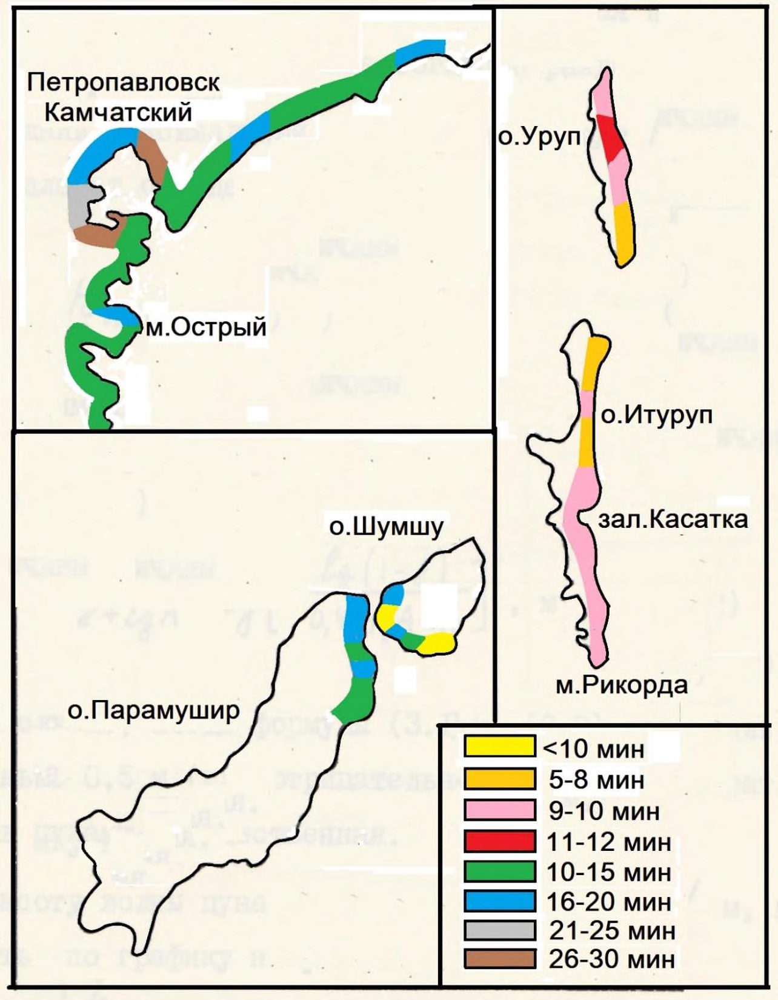
На лобовой части контура сооружения значение p c зависит от формы контура, расположения точки измерения и ориентации сооружения по отношению к потоку воды.
Таблица 9.1 Значения коэффициента x c для погруженных в воду сооружений
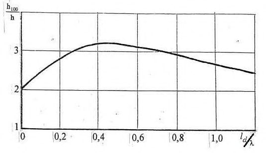
Для прямоугольного контура (рисунок 9.4, а) с отношением длины к ширине менее 5, одна из осей которого составляет с направлением потока угол не более 10°, распределение p с вдоль лобовой грани следует определять по графикам на рисунке 9.5 при β = 90°. Среднее значение p с на лобовой стороне прямоугольника p c следует определять по графику на рисунке 9.6 для β = 90°. На боковых сторонах прямоугольника можно принять p с = -0,5.
На рисунке 9.4 стрелки, обозначенные l, l 1 , l 2, показывают направления отсчета координат точек вдоль соответствующих граней сооружения.
В случаях, когда оси симметрии прямоугольного сооружения составляют с направлением потока угол более 10° (рисунок 9.4, б), значения p с на лобовых сторонах следует определять по графикам на рисунке 9.5 при углах , равных 1 и 2 соответственно. Средние значения p с вдоль стороны следует определять по графику на рисунке 9.6 для соответствующих углов .
Для прямоугольника с отношением длины лобовой стороны к ширине более 5 (рисунок 9.4, в) значение p с вдоль большей лобовой стороны определяют по графикам на рисунке 9.7, а среднее значение p с - по графику на рисунке 9.8 для соответствующего угла . На второй лобовой стороне прямоугольника принимают p с =1.
Для контура сооружения в виде окружности (рисунок 9.4, г) значение p с вдоль каждой ее половины определяют по графику на рисунке 9.9.
Для контура в виде эллипса (рисунок 9.4, д) с отношением длин малой оси эллипса к большой, равным m , в пределах 0,2 < ν < 0,7, распределение значений p с вдоль лобовой части контура определяется по формуле
где γ -угол между направлением потока и большой осью эллипса (γ < 45°).
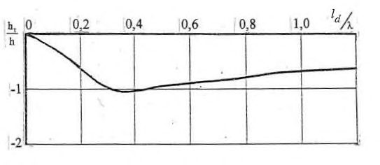
Рисунок 9.4 - Основные типы контуров плохо проницаемых береговых сооружений
Рисунок 9.5 - Распределение значения коэффициента p с по контуру сооружения при b L 5
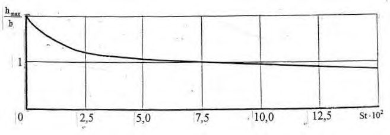
Рисунок 9.6 - Распределение значения коэффициента p с в зависимости от угла подхода потока к лицевой стороне сооружения прямоугольной формы при b L 5
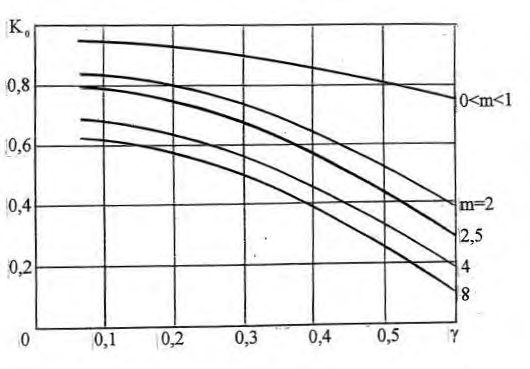
Рисунок 9.7 - Распределение значений коэффициента p с по контуру прямоугольника при b L 5
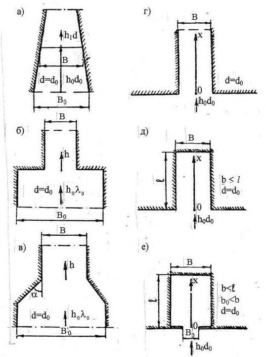
Рисунок 9.8 - Распределение значения коэффициента p с в зависимости от угла подхода потока к лицевой грани прямоугольника при b L 5
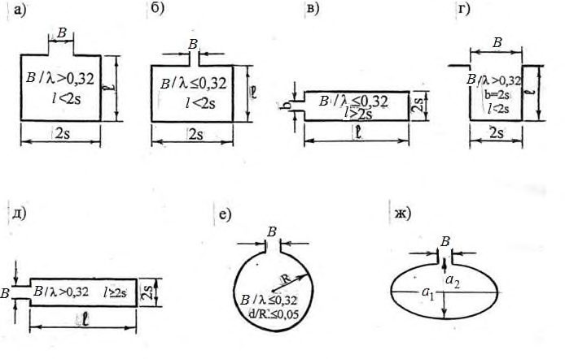
Рисунок 9.9 - Распределение значений p с по контуру окружности
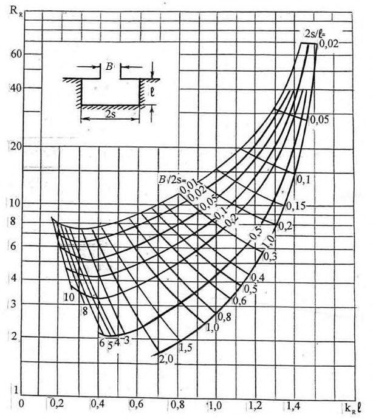
Угловые координаты θ1, θ2 точек контура эллипса, разделяющих лобовую и тыльную его части, определяются по формулам:
Для сооружений, имеющих в плане форму многоугольника, значение p с определяют следующим образом. При расположении контура к потолку выпуклой частью (рисунок 9.4, е) значение p с на этой части контура определяют по графикам на рисунке 9.5. Если контур обращен к потолку вогнутой частью, то на этой части контура принимают p с =1.
Среднюю по контуру любой формы глубина воды к d , м, определяют по формуле
где p с -среднее значение p с вдоль контура сооружения в плане.
Значение p с контуров круговой и эллиптической форм принимают равным минус 0,45. Для прямоугольного контура и многоугольника среднее значение p с определяют по формуле
СП 292.1325800.2017 где
i - номер стороны контура; i p с , - среднее значение p с вдоль i -й стороны объекта; i a - длина i -й стороны объекта, м.
Уровень воды во внутренней части проницаемых сооружений (типа жилых зданий) допускается принимать равным к d .
После определения глубины воды к d у контура сооружения нагрузки на плохо проницаемый объект, с учетом деформации свободной поверхности при его обтекании, находят следующим образом.
Давление р , кПа, в произвольной точке смоченной поверхности внешней стороны сооружения следует определять по формуле
Удельную нагрузку вдоль контура сооружения Р , кН/м, определяют по формуле
На внутренней стороне контура к к d d = .
Нагрузки на отдельную стену сооружения определяют как результат приложенных нагрузок на каждую из ее сторон.
Смещающую силу x F , кН, действующую на плохо проницаемый объект в направлении распространения потока, определяют по формуле
где значение x с принимают по таблицам 7.2, 9.1.
Высоту F h , м, точки приложения силы x F над основанием сооружения определяют по формуле
Взвешивающую силу N , кН, действующую на непроницаемое сооружение, определяют по формуле
где к S - площадь сооружения в плане, м.
Взвешивающую силу, действующую на проницаемое сооружение, определяют по формуле
где G - вес сооружения, кН; ρ k - коэффициент, равный отношению плотностей воды и материала.
Первая часть формулы (9.26) верна для сооружения с постоянным погонным весом.
Сдвиг сооружения происходит при условии
где тр k - коэффициент трения сооружения по основанию.
Опрокидывающий момент опр M , кН м, действующий на сооружение, определяют по формуле
где L - длина объекта в направлении действия потока, м.
10Градостроительные аспекты уменьшения цунами-риска и требования к планировке и застройке цунамиопасных урбанизированных территорий
СП 292.1325800.2017 разработки проектов территориального планирования и социальноэкономического развития урбанизированных территорий по СП 42.13330, а также при подготовке этих территорий к бедствиям/ЧС, вызываемым воздействием цунами. При этом в составе ЦОТ рассматриваются застроенное побережье и примыкающая к нему акватория с прибрежными сооружениями.
Настоящий раздел содержит обязательные требования, правила и мероприятия, учитываемые и реализуемые в процессе управления безопасным развитием урбанизированных ЦОТ.
Регулирование урбанизированной территории за пределами зоны затопления, как правило, обязательно для трудно эвакуируемых ЦОТ, в том числе с близкими цунами (см. 5.1.3, 5.1.5).
При решении задачи а) очень важно уменьшить влияние вторичных опасностей, сопутствующих цунами, в том числе:
- обеспечить достаточно большой промежуток между зданиями, чтобы избежать или уменьшить влияния столкновения с выбрасываемыми на берег транспортными средствами, предметами, смываемыми с берега, различными обломками и льдом;
- обеспечить устойчивость фундаментов зданий (достаточная глубина заложения и малая вымываемость обратной засыпки).
В подзоне I ts = IV новое строительство следует осуществлять с учетом уровня цунами-риска. При этом различаются здания, которые после бедствия следует восстанавливать (банки, гостиницы), и те, которые восстанавливать не надо (магазины розничной торговли и т. п.).
В подзоне с интенсивностью цунами I ts = IV (прогноз сильного цунами) нахождение особо опасных объектов [2] категорически запрещено.
Здания дошкольных образовательных и общеобразовательных организаций, медицинских организаций, выполняющих функции в области медицины катастроф, критически важных объектов (ГОСТ Р 22.0.02), здания и сооружения, необходимые для ЖОН ЧС, включая собственные здания системы ЖОН ЧС (ГОСТ Р 22.3.05), общественные здания с массовым пребыванием людей запрещается строить в подзоне с интенсивностью цунами I ts = IV.
Строительство в подзоне с интенсивностью цунами I ts = IV морских портовых ГТС классов I и II может быть разрешено на основании Постановления Правительства Российской Федерации; в этом случае проектирование, строительство и эксплуатация таких портовых сооружений выполняются в соответствии с техническим заданием заказчика.
- под управлением и контролем находятся только объекты и сети жизнеобеспечения по ГОСТ Р 22.3.05;
- мосты и другие сооружения, находящиеся на пути эвакуации населения, а также критические важные и потенциально опасные объекты [3], сооружения и сети системы ЖОН ЧС (ГОСТ Р 22.3.05) должны остаться действующими во время и после цунами.
- берегоукрепление по СП 116.13330, защита от размыва и улучшение прибрежной полосы путем создания твердого буфера, при этом плавучие и прибрежные лодочные причалы, доки, пирсы и лодки, подверженные превращению в обломки, будут отделены усиленной береговой полосой;
- перенос стоянок автомобилей из опасной прибрежной зоны в зону с малой глубиной потока, причем уменьшение числа открытых стоянок автомобилей в зоне затопления достигается строительством защищенных подземных гаражей.
В подзонах с интенсивностью I ts = II и в других зонах, где ожидаются небольшие скорости потока, рекомендуется использовать для уменьшения числа обломков территории мягкого буфера (ограды, насаждения и другие барьеры, сдерживающие бревна, небольшие деревья и грязевые потоки).
На ЦОТ с близкими цунами паспортизацию застройки и назначение объектов-аналогов рекомендуется совмещать с паспортизацией и анализом сейсмостойкости зданий и сооружений.
Кроме базовых объектов для анализа безопасности в процессе паспортизации ЦОТ следует с учетом опыта ранее происшедших повреждающих и разрушительных цунами отбирать строительные сооружения, которые по своей конструктивной схеме и условиям эксплуатации аналогичны зданиям -представителям массового строительства на рассматриваемой ЦОТ. Такие строительные сооружения имеют достоверную оценку (класс) их конструктивной цунамиуязвимости, вследствие чего представляют высокую ценность для рисканализа и называются объектами-аналогами.
11Сценарии бедствий и анализ цунами-риска
Оценка безопасности урбанизированных территорий, подверженных воздействию цунами, осуществляется специализированной организацией путем многостороннего анализа цунами-риска с помощью сценариев последствий цунамигенного события (вероятных бедствий), как правило, разрабатываемых на базе ГИС.
Примечания
1 В зависимости от конечной цели анализ цунами-риска и сценарии бедствия выполняются для проектирования ответственных сооружений или комплекса объектов, предварительных и окончательных оценок освоения тех или иных ЦОТ, разработки проекта территориального планирования и социально-экономического развития поселений на ЦОТ, в целях страхования рисков, связанных с жизнью и здоровьем людей и ущербом имуществу и, наконец, в целях повышения безопасности застройки и населения ЦОТ [1]-[5].
2 Цели и задачи риск-анализа указываются заказчиком в задании на проектирование.
Сценарии бедствия рекомендуется разрабатывать для различных видов строительного проектирования, а также в расчетно-аналитических целях.
Для ЦОТ с близкими цунами следует разрабатывать комплексные сценарии бедствия, включающие в себя последствия цунамигенного землетрясения и цунами.
Для каждой ЦОТ разрабатывают обычно несколько сценариев бедствия от воздействия цунами, среди которых основным рабочим вариантом является ночной сценарий бедствия, чаще всего наихудший с точки зрения риска, связанного с жизнью и здоровьем людей (при отсутствии вторичного химического или радиоактивного заражения). В сценариях бедствий необходимо учитывать вероятность появления вторичных (триггерных) по отношению к цунами вредоносных последствий, исходящих от возникающих техногенных и природных факторов (потенциально опасных объектов, оползней, камнепадов, разжижения грунта и т. п.).
11.5Критерии и параметры допустимого риска и условия безопасного развития
- ЦОТ классифицируется как легко эвакуируемая или же значение комплексного цунами-риска не превышает предельно допустимый уровень риска, равный 10 -5 год -1 ;
- повреждения сооружений и материальные потери собственности приемлемы для владельцев, а их общий размер и специфика позволяют предотвратить (купировать) вторичные техногенные угрозы для жизни и здоровья населения и сохранить ЖОН ЧС, необходимое для ликвидации ЧС (включая минимально необходимый жилой фонд) на пострадавшей территории;
- экологические ущербы самовосполняемы в течение короткого, приемлемого срока, не превышают 5 % общего объема экономических потерь и допустимы с точки зрения устойчивого развития;
- как ликвидация ЧС на рассматриваемой ЦОТ, так и полная реабилитация и восстановление ЦОТ после бедствия могут быть осуществлены собственными силами и средствами ЦОТ.
Эти параметры являются дополнительными индикаторами безопасности рассматриваемой урбанизированной территории и определяются с помощью шкалы бедствий (приложение И).
Таким образом, безопасность любой ЦОТ описывается четырьмя индикаторами: R ind , M d , p v , d m.
- предельно допустимые значения индивидуального риска принимают в соответствии с 11.5.1;
- большое бедствие недопустимо, то есть предельно допустимое значение (магнитуда) бедствия M d ≤ 4,5 по приложению И;
- безвозвратные и санитарные потери должны быть относительно невелики, что характеризуется предельным значением индекса p v ≤ 0,75;
- экономические (общие монетарные) потери не должны превышать 25 % территориальной части ВВП и обеспечивать возможность ликвидировать ЧС и преодолеть бедствие собственными силами.
Примечания
1 Предельное значение индекса социальной уязвимости населения ЦОТ устанавливается заказчиком по согласованию с органами ГО ЧС для разных субъектов Российской Федерации в пределах от 0,5 до 0,75.
2 Предельные значения допустимых параметров p v и d m назначаются заказчиком в задании на проектирование, а проверка непревышения этих параметров выполняется в результате анализа риска в зависимости от поставленных цели и задач.
При картировании цунами-риска следует выделять зоны с недопустимым уровнем комплексного индивидуального риска бедствия. При этом недопустимым риском считается значение индивидуального риска, на порядок превышающее соответствующее предельно допустимое значение.
Карты цунами-риска являются обязательной (неотъемлемой) составной частью проектов территориального планирования.
Примечание - Выбор уровня и масштаба карт цунами-риска проводится проектировщиком-градостроителем и утверждается территориальным органом по архитектуре и градостроительству.
Программа безопасного развития той или иной ЦОТ может предусматривать поэтапную реализацию, однако первым этапом должно быть удовлетворение требований механической безопасности по критерию индивидуального риска.
12Мониторинг и контроль цунамибезопасности зданий, сооружений и территорий
СП 292.1325800.2017 государственных структур муниципального, территориального, регионального и федерального подчинения, а также по заданию отдельных собственников и страховых компаний.
В процессе эксплуатации морских портовых ГТС следует проводить натурные наблюдения, главной целью которых является обеспечение безопасной эксплуатации сооружений путем своевременного выявления опасного развития процессов взаимодействия сооружений с природной средой и непрогнозируемых процессов и явлений для оперативного выполнения предупреждающих и защитных мероприятий. В процессе наблюдений проводят:
- оценку изменений инженерно-геологических условий за период строительства и эксплуатации гидроузла, включая изменения рельефа, геологического строения, гидрогеологических условий, состава, строения и свойств грунтов, активности инженерно-геологических процессов;
- установление причин осадок, просадок, смещений, деформаций, трещинообразования и других непроектных ситуаций;
- качественный и количественный прогнозы изменения во времени и в пространстве техногенных и природных процессов с оценкой вероятности аварийных ситуаций и связанного с этим ущерба;
- разработка мер по предотвращению дальнейшего развития негативных процессов в основании, восстановлению условий его нормальной работы, обоснованию защитных мероприятий.
АПриложение А. Карты и таблица цунамиопасности морских побережий Российской Федерации
А.1Тихоокеанский регион
Карты цунамиопасности морских побережий Тихоокеанского региона приведены на рисунках А.1-А.7.
Рисунок А.1 - Карта цунамиопасности побережья Камчатки
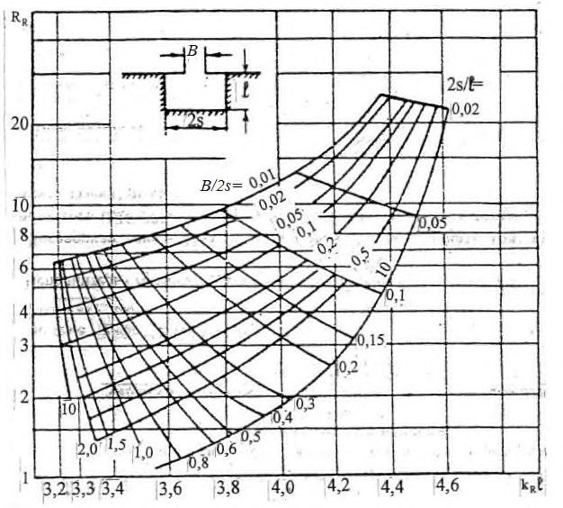
Рисунок А.2 - Карта цунамиопасности побережья северных Курильских островов
Рисунок А.3 - Карта цунамиопасности побережья средних Курильских островов
Рисунок А.4 - Карта цунамиопасности побережья южных Курильских островов
Рисунок А.5 - Карта цунамиопасности побережья Охотского моря
Рисунок А.6 - Карта цунамиопасности побережья Приморья
Рисунок А.7 - Карта цунамиопасности восточного побережья о-ва Сахалин
А.2Каспийское море
Карта цунамиопасности побережья Каспийского моря приведена на рисунке А.8.
Рисунок А.8 - Карта цунамиопасности побережья Каспийского моря
А.3Черное море
Карта цунамиопасности побережья Черного моря приведена на рисунке А.9.
Рисунок А.9 - Карта цунамиопасности побережья Черного моря
А.4 Нормативные значения вертикальных заплесков цунами и периода волны на морских побережьях Российской Федерации приведены в таблице А.1.
Таблица А.1 Нормативные значения вертикальных заплесков цунами и периода волны на морских побережьях Российской Федерации
| Географический пункт | Значения вертикальных заплесков цунами h run , м | Значения вертикальных заплесков цунами h run , м | Значения вертикальных заплесков цунами h run , м | Период волны Т, |
|---|---|---|---|---|
| Географический пункт | h 50 | h 100 | h 50; 0,1 | мин |
| Каспийское море. Республика Дагестан | Каспийское море. Республика Дагестан | Каспийское море. Республика Дагестан | Каспийское море. Республика Дагестан | Каспийское море. Республика Дагестан |
| Махачкала | * | 0,7 | 2,6 | * |
| Каспийск | * | 0,7 | 2,5 | * |
| Избербаш | * | 0,8 | 3,0 | * |
| Дербент | * | 0,9 | 3,6 | * |
| Тихий океан. Камчатский край, f = 0,07 год -1 | Тихий океан. Камчатский край, f = 0,07 год -1 | Тихий океан. Камчатский край, f = 0,07 год -1 | Тихий океан. Камчатский край, f = 0,07 год -1 | Тихий океан. Камчатский край, f = 0,07 год -1 |
| Усть-Камчатск (коса) | 3,0 | 4,5 | 8,5 | * |
| б. Ольга | 8,5 | 13,5 | 24,0 | * |
| Жупаново | 5,0 | 7,5 | 14,0 | * |
| б. Моржовая | 9,0 | 13,5 | 24,5 | * |
| м. Шипунский | 8,0 | 12,0 | 22,0 | * |
| Налычево | 5,0 | 8,0 | 14,0 | * |
| Халактырка | 5,5 | 8,0 | 14,5 | * |
| м. Безымянный | 3,5 | 5,5 | 10,0 | * |
| б. Раковая | 2,0 | 3,5 | 6,0 | * |
| Петропавловск-Камчатский | 1,0 | 1,5 | 3,0 | 15; 24; 30 |
| б. Тарья | 2,0 | 3,0 | 5,5 | 42 15; 24; 30 |
| м. Маячный | 4,0 | 6,0 | 11,0 | 42* * |
| б. Вилючинская | 7,0 | 10,5 | 19,5 | 12 |
| б. Саранная | 5,0 | 8,0 | 14,0 | * |
| б. Жировая | 6,0 | 9,0 | 16,0 | * |
| б. Русская | 8,5 | 13,5 | 24,0 | * |
| м. Поворотный | 7,0 | 11,0 | 20,0 | * |
| б. Асача | 5,0 | 8,0 | 14,0 | * |
| б. Ходутка | 5,0 | 8,0 | 14,0 | * |
| о. Уташуд | 6,0 | 9,5 | 17,0 | * |
| м. Лопатка (вост.) | 6,0 | 9,5 | 17,0 | * |
| м. Лопатка (зап.) | 3,5 | 5,5 | 10,0 | * |
| п. Озерновский | 3,5 | 5,5 | 10,0 | * |
| о. Медный | 2,0 | 2,5 | 5,0 | * |
| Никольское (о. Беринга) | 4,5 | 7,0 | 12,5 | 25; 43 |
Продолжение таблицы А.1
| Географический пункт | Значения вертикальных заплесков цунами h run , м | Значения вертикальных заплесков цунами h run , м | Значения вертикальных заплесков цунами h run , м | Период волны Т, мин |
|---|---|---|---|---|
| h 50 | h 100 | h 50; 0,1 | ||
| Тихий океан. Курильские острова** | Тихий океан. Курильские острова** | Тихий океан. Курильские острова** | Тихий океан. Курильские острова** | Тихий океан. Курильские острова** |
| о. Итуруп, f =0,17 год -1 | о. Итуруп, f =0,17 год -1 | о. Итуруп, f =0,17 год -1 | о. Итуруп, f =0,17 год -1 | о. Итуруп, f =0,17 год -1 |
| Сентябрьский | 6,0 | 7,5 | 12,0 | 12 |
| Буревестник | 4,0 | 5,5 | 8,5 | 12 |
| Курильск | 1,5 | 1,5 | 2,5 | 7; 11; 20 |
| о. Кунашир, f =0,17 год -1 | о. Кунашир, f =0,17 год -1 | о. Кунашир, f =0,17 год -1 | о. Кунашир, f =0,17 год -1 | о. Кунашир, f =0,17 год -1 |
| м. Ловцова | 3,5 | 4,5 | 7,0 | * |
| р. Илюшина (Винай) | 4,5 | 6,0 | 9,5 | * |
| б. Космодемьянская | 2,5 | 3,5 | 5,5 | * |
| Южно-Курильск | 3,0 | 4,5 | 6,5 | 23; 35; 70 |
| Серноводск | 3,0 | 4,0 | 6,0 | * |
| Головнино | 1,5 | 2,0 | 3,0 | * |
| Малая Курильская гряда, f =0,17 год -1 | Малая Курильская гряда, f =0,17 год -1 | Малая Курильская гряда, f =0,17 год -1 | Малая Курильская гряда, f =0,17 год -1 | Малая Курильская гряда, f =0,17 год -1 |
| о. Зеленый | 4,0 | 5,0 | 8,0 | * |
| о. Юрий | 2,5 | 3,5 | 5,5 | * |
| о. Полонского | 3,0 | 4,0 | 6,5 | * |
| о. Онекотан, f =0,11 год -1 | о. Онекотан, f =0,11 год -1 | о. Онекотан, f =0,11 год -1 | о. Онекотан, f =0,11 год -1 | о. Онекотан, f =0,11 год -1 |
| б. Немо | 3,5 | 5,0 | 8,5 | * |
| б. Муссель | 6,0 | 8,5 | 14,0 | 10 |
| о. Симушир | о. Симушир | о. Симушир | о. Симушир | о. Симушир |
| б. Мильна | 3,0 | 4,0 | 6,5 | * |
| о. Матуа | о. Матуа | о. Матуа | о. Матуа | о. Матуа |
| б. Двойная | 2,5 | 4,0 | 6,5 | * |
| о. Шиашкотан | о. Шиашкотан | о. Шиашкотан | о. Шиашкотан | о. Шиашкотан |
| б. Восходная | 5,0 | 7,0 | 11,5 | * |
| о. Парамушир, f =0,09 год -1 | о. Парамушир, f =0,09 год -1 | о. Парамушир, f =0,09 год -1 | о. Парамушир, f =0,09 год -1 | о. Парамушир, f =0,09 год -1 |
| Северо-Курильск | 12,0 | 18,0 | 30,5 | 5; 10; 16; 18; 45. Средн. 15 |
| Подгорный | 5,5 | 8,5 | 14,5 | * |
| б. Океанская | 6,5 | 9,5 | 16,0 | * |
| м. Васильева (вост.) | 5,5 | 8,0 | 14,0 | 12 |
| м. Васильева (зап.) | 3,5 | 5,5 | 9,0 | 12 |
| Шелихово | 2,0 | 3,0 | 5,0 | * |
Продолжение таблицы А.1
| Географический пункт | Значения вертикальных заплесков цунами h run , м | Значения вертикальных заплесков цунами h run , м | Значения вертикальных заплесков цунами h run , м | Период волны Т, мин |
|---|---|---|---|---|
| Географический пункт | h 50 | h 100 | h 50; 0,1 | Период волны Т, мин |
| о. Шикотан, f =0,17 год -1 | о. Шикотан, f =0,17 год -1 | о. Шикотан, f =0,17 год -1 | о. Шикотан, f =0,17 год -1 | о. Шикотан, f =0,17 год -1 |
| Малокурильское | 4,5 | 6,0 | 9,0 | 19 |
| б. Отрадная | 2,5 | 3,0 | 5,0 | * |
| Крабовозаводское | 4,5 | 6,0 | 9,0 | 5; 11; 29 |
| м. Край Света | 4,5 | 6,5 | 9,5 | 14 |
| б. Димитрова | 6,5 | 8,5 | 13,5 | * |
| б. Церковная | 9,0 | 12,0 | 18,5 | 14 |
| о. Шумшу, f =0,09 год -1 | о. Шумшу, f =0,09 год -1 | о. Шумшу, f =0,09 год -1 | о. Шумшу, f =0,09 год -1 | о. Шумшу, f =0,09 год -1 |
| м. Курбатова | 4,0 | 5,5 | 10,0 | * |
| м. Норд | 3,5 | 5,0 | 8,5 | * |
| Байково | 10,0 | 14,5 | 25,0 | 15 |
| Козыревск | 13,0 | 18,5 | 32,0 | * |
| Бабушкино | 5,5 | 8,0 | 13,5 | 10 |
| Тихий океан. Магаданская область | Тихий океан. Магаданская область | Тихий океан. Магаданская область | Тихий океан. Магаданская область | Тихий океан. Магаданская область |
| Магадан, б. Нагаева | 1,0 | 2,0 | 4,0 | * |
| Тихий океан. Приморский край, f =0,05 год -1 | Тихий океан. Приморский край, f =0,05 год -1 | Тихий океан. Приморский край, f =0,05 год -1 | Тихий океан. Приморский край, f =0,05 год -1 | Тихий океан. Приморский край, f =0,05 год -1 |
| Терней | 0,2 | 0,4 | 0,9 | * |
| Рудная Пристань | 2,2 | 3,5 | 7,8 | 5; 62; 75 |
| зал. Владимира | 0,7 | 0,9 | 2,0 | * |
| зал. Ольга | 0,7 | 0,9 | 2,0 | * |
| Моряк-Рыболов | 0,9 | 1,5 | 3,3 | * |
| б. Кит | 1,7 | 2,4 | 5,9 | * |
| Находка | 0,2 | 0,4 | 0,9 | 6; 35; 66 |
| Владивосток | 0,2 | 0,2 | 0,7 | 12; 33; 58. Средн. 40 |
| Посьет | 0,0 | 0,0 | 0,2 | 25 |
| Тихий океан. Сахалинская область** | Тихий океан. Сахалинская область** | Тихий океан. Сахалинская область** | Тихий океан. Сахалинская область** | Тихий океан. Сахалинская область** |
| о. Сахалин, Восточное и Южное побережье f = 0,11 год -1 | h 50 , м | h 100 , м | h 50; 0,1 , м | Т , мин |
| м. Крильон | 0,5 | 1,0 | 1,5 | * |
| Анива | 0,5 | 0,5 | 1,0 | * |
| м. Левенорна | 0,0 | 0,0 | 0,5 | * |
| Корсаков | 1,0 | 1,0 | 2,0 | 19; 33 |
| Стародубское | 0,5 | 0,5 | 1,0 | * |
| м. Терпения | 0,5 | 0,5 | 1,0 | * |
| Поронайск | 0,5 | 1,0 | 1,5 | 34; 60 |
| м. Беллинсгаузена | 0,5 | 0,5 | 1,0 | * |
Продолжение таблицы А.1
| Географический пункт | Значения вертикальных заплесков цунами h run , м | Значения вертикальных заплесков цунами h run , м | Значения вертикальных заплесков цунами h run , м | Период волны Т, мин |
|---|---|---|---|---|
| Географический пункт | h 50 | h 100 | h 50; 0,1 | Период волны Т, мин |
| м. Шельтинга | 0,5 | 0,5 | 1,0 | * |
| Пограничное | 0,5 | 1,0 | 1,5 | * |
| зал. Лунский | 1,5 | 2,0 | 3,0 | * |
| Катангли | 1,0 | 1,5 | 2,0 | * |
| Чайво | 1,0 | 1,5 | 3,0 | * |
| зал. Пильтун | 1,0 | 1,0 | 2,0 | * |
| Москальво | 0,5 | 0,5 | 1,0 | * |
| м. Левенштерна | 0,0 | 0,5 | 0,5 | * |
| м. Марии | 0,0 | 0,0 | 0,5 | * |
| м. Елизаветы | 0,0 | 0,5 | 0,5 | * |
| Сахалин, Западное побережье, f = 0,05 год -1 | Сахалин, Западное побережье, f = 0,05 год -1 | Сахалин, Западное побережье, f = 0,05 год -1 | Сахалин, Западное побережье, f = 0,05 год -1 | Сахалин, Западное побережье, f = 0,05 год -1 |
| Невельск | 1,5 | 3,0 | 6,0 | * |
| Холмск | 1,0 | 2,0 | 4,0 | 8 |
| Углегорск | 0,5 | 0,5 | 1,0 | 1; 2 |
| Яблочное | 1,0 | 2,0 | 4,0 | * |
| Калинино | 1,0 | 2,0 | 3,5 | * |
| Заветы Ильича | 2,0 | 3,5 | 7,0 | * |
| Ясноморский | 1,5 | 3,0 | 6,0 | * |
| Ловецкое | 1,5 | 2,5 | 5,0 | * |
| Танги | 0,0 | 0,0 | 0,5 | * |
| Александровск-Сахалинский | 0,0 | 0,0 | 0,0 | * |
| м. Фуругельма | 0,0 | 0,0 | 0,5 | * |
| м. Жуковского | 0,0 | 0,5 | 0,5 | * |
| Шахтерск | 0,0 | 0,5 | 0,5 | * |
| м. Изыльметьева | 0,0 | 0,5 | 0,5 | * |
| м. Ламанон | 0,0 | 0,5 | 0,5 | * |
| Красногорск | 0,5 | 1,0 | 1,5 | * |
| м. Штернберга | 0,5 | 1,0 | 2,0 | * |
| Ильинский | 0,5 | 1,0 | 2,0 | * |
| Томари | 0,5 | 1,0 | 2,0 | * |
| м. Чихачева | 0,5 | 1,0 | 2,0 | * |
| м. Слепиковского | 0,5 | 0,5 | 1,5 | * |
| Горнозаводск | 1,5 | 2,5 | 4,5 | * |
| Черное море. Краснодарский край | Черное море. Краснодарский край | Черное море. Краснодарский край | Черное море. Краснодарский край | Черное море. Краснодарский край |
| Волна | * | 1,5 | * | 10 |
| Благовещенская | * | 2,0 | * | 10 |
| Витязево | * | 2,0 | * | 10 |
| Анапа | * | 1,0 | * | 10 |
Продолжение таблицы А.1
| Географический пункт | Значения вертикальных заплесков цунами h run , м | Значения вертикальных заплесков цунами h run , м | Значения вертикальных заплесков цунами h run , м | Период волны Т, мин |
|---|---|---|---|---|
| Географический пункт | h 50 | h 100 | h 50; 0,1 | Период волны Т, мин |
| м. Большой Утриш | * | 1,0 | * | 10 |
| Южная Озереевка | * | 1,0 | * | 10 |
| Новороссийск | * | 0,5 | * | 10 |
| Геленджик | * | 1,0 | * | 10 |
| Дивноморское | * | 1,0 | * | 10 |
| Криница | * | 1,0 | * | 10 |
| Джубга | * | 1,0 | * | 10 |
| Новомихайловский | * | 1,0 | * | 10 |
| Ольгинка | * | 1,5 | * | 10 |
| Туапсе | * | 1,0 | * | 10 |
| Шепси | * | 0,5 | * | 10 |
| Лазаревское | * | 1,5 | * | 10 |
| Головинка | * | 0,5 | * | 10 |
| Сочи | * | 0,5 | * | 10 |
| Адлер | * | 0,5 | * | 10 |
| Черное море. Республика Крым | Черное море. Республика Крым | Черное море. Республика Крым | Черное море. Республика Крым | Черное море. Республика Крым |
| Керчь | * | 2,0 | * | 10 |
| Приморский | * | 2,0 | * | 10 |
| Феодосия | * | 2,0 | * | 10 |
| Орджоникидзе | * | 2,0 | * | 10 |
| Коктебель | * | 1,0 | * | 10 |
| Судак | * | 2,0 | * | 10 |
| Малоречное | * | 1,0 | * | 10 |
| Алушта | * | 1,0 | * | 10 |
| Гурзуф | * | 1,0 | * | 10 |
| Ялта | * | 1,0 | * | 10 |
| Гаспра | * | 1,0 | * | 10 |
| Симеиз | * | 1,5 | * | 10 |
| Форос | * | 1,0 | * | 10 |
| Севастополь | * | 1,0 | * | 10 |
| Кача | * | 1,0 | * | 10 |
| Николаевка | * | 1,0 | * | 10 |
| Евпатория | * | 1,5 | * | 10 |
| Заозерное | * | 1,0 | * | 10 |
| Мирный | * | 1,0 | * | 10 |
Примечания
1 В настоящей таблице использованы следующие условные обозначения: h 50 и h 100 - максимальные высоты заплеска цунами с повторяемостью в среднем соответственно один раз в 50 лет и один раз в 100 лет; h 50; 0,1 - высота вертикального заплеска цунами с 90 %-ной обеспеченностью не превышения (или 10 % вероятности превышения) в течение 50 лет, приближенно соответствует высоте вертикального заплеска цунами h 500 с повторяемостью в среднем один раз в 500 лет;
Т - период волны; f - частота повторяемости сильных цунами в регионе
2 В настоящей таблице даны нормативные значения вертикальных заплесков. Для получения расчетных величин следует использовать повышающий коэффициент, равный 1,1.
- 3 Значения вертикальных заплесков, представленные в настоящей таблице, действительны только для стандартного цунамиопасного побережья (рисунок А.10) и в случае несоответствия (значительного отклонения) рассматриваемого побережья этому определению значение вертикального заплеска должно быть откорректировано по результатам ЦМР.
- 4 Значения вертикальных заплесков, приведенные в настоящей таблице, даны с округлением до 0,5 м (кроме побережья Каспийского моря).
Рисунок А.10 - Схема стандартного цунамиопасного побережья с характеристиками наката цунами
Примечания к таблице А.1 и рисунку А.10
1 Опасность цунами Z измеряется вероятностью того, что в данном месте за время t произойдет хотя бы одно цунами с высотой вертикального заплеска, превышающей значение h :
где средняя частота ( h ) цунами с высотой заплеска, превышающей уровень h, носит название функции повторяемости. Эта функция, как показывает анализ данных наблюдений, хорошо аппроксимируется экспонентой при h > 0,5 м: или h t
где f - частота повторяемости сильных цунами (региональный параметр); h * - характеристическая высота цунами (локальный параметр).
- 2 Удобно использовать максимальные уровни с типовой пятидесятилетней и столетней повторяемостью h 50 и h 100, которые цунами превысит в среднем один раз за 50 или 100 лет:
3 Уровень ht , который высота цунами превысит в среднем 1 раз за t лет, можно вычислить по формулам:
= h ln(
ln(100 ft f
)
)
.
БПриложение Б. Районирование участка побережья Камчатки и ряда Курильских островов по периоду волны цунами
Рисунок Б.1 - Карта-схема районирования участка побережья Камчатки и ряда Курильских островов по периоду цунами
Для побережий Черного и Каспийского морей период волны цунами следует принимать Т = 10 мин.
ВПриложение В. Усовершенствованная шкала опасности/интенсивности цунами
Таблица В.1 Усовершенствованная шкала опасности/интенсивности цунами
| Интенсивность I ts | Интенсивность I ts | |
|---|---|---|
| Качественная характеристика (термин) по силе, последствиям | Количествен -ная характерист и-ка, баллы | Типичные эффекты/последствия, наблюдаемые на побережье и прилегающей акватории |
| Незаметное | 0 | (α) Высота заплеска не превышает 0,5 м, что незаметно и отмечается только мареографами |
| Очень слабое/замет- ное | I | (α) Высота заплеска 0,5-1 м, что замечается немногими и фиксируется мареографами. (γ) Некоторые прибрежные сооружения категории уязвимости (f) и отдельные прибрежные сооружения категории уязвимости (vh) получают повреждения степени 1 |
| Слабое | II | (α) Высота заплеска 1-2 м, что наблюдается всеми. (β) Плоские побережья затапливаются; легкие суда выбрасываются на берег. (γ) Многие прибрежные сооружения категории уязвимости (f) получают ущерб степени 1, а отдельные - степени 2; прибрежные сооружения категории уязвимости, отличной от (f), и большинство береговых сооружений не получают повреждений |
| Умеренное/ повреждающее | III | (α) Высота заплеска 2-4 м. (β) Легкие суда выбрасываются или уносятся; берега засоряются обломками и мусором. (γ) Многие здания и сооружения категорий уязвимости (f) и (vh) имеют повреждения степени 3, некоторые - степени 4. Многие здания категории уязвимости (mh) имеют повреждения степени 2, некоторые - степени 3. Некоторые здания категории (m) имеют повреждения степени 2. Некоторые здания категории уязвимости (lm) имеют повреждения степени 1 |
| Сильное/силь- но повреждающее | IV | (α) Высота заплеска 4-8 м. (β) Крупные суда повреждены и (или) выброшены на сушу; сильный смыв почвы с полей. При отсутствии или несработке СПЦ отдельные жертвы. (γ) Большинство зданий категорий уязвимости (f) и (vh) имеют повреждения степени 4 и 5. Многие здания категории уязвимости (h) и некоторые категории уязвимости (mh) имеют повреждения до степени 4. Некоторые здания категории уязвимости (m) могут быть частично разрушены |
| Очень сильное/ разрушитель- ное | V | (α) Высота заплеска 8-16 м. (β) Вся территория затопления покрыта обломками. Много людей гибнет, несмотря на СПЦ, иногда возникает паника. (γ) Многие здания категории уязвимости (mh) имеют повреждения до степени 4 |
| Катастрофиче- ское/ уничтожающее | VI | (α) Высота заплеска более 16 м. (β) Полное опустошение приморских территорий по фронту и в глубину. Большое число жертв, несмотря на СПЦ. Массовая паника. (γ) Большинство зданий категорий уязвимости (h) и (mh) и некоторые категории уязвимости (lm) разрушены |
Примечания
- 1 В настоящей таблице применены следующие обозначения: (α) - эффекты, наблюдаемые на прибрежной морской акватории; (β) - эффекты, наблюдаемые на побережье; (γ) - эффекты, наблюдаемые на строительных сооружениях.
- 2 При разработке настоящей шкалы максимально использовались градация и термины, принятые в шкале оценки силы цунами Иида-Имамура и эмпирической шкале Амбрейсиса для оценки интенсивности цунами.
- 3 Высота заплеска цунами определяется на урезе воды (на границе акватории и территории).
- 4 Степени повреждения строительных сооружений приведены в таблице Ж.1.
- 5 В качестве укрупненной территориальной характеристики цунамиопасности принимается интенсивность, соответствующая округленному значению высоты заплеска h 100.
- 6 Категорию конструктивной уязвимости прибрежных и береговых строительных сооружений принимают по таблице В.2. При этом рассматривают проектную (для вновь возводимых зданий) или оценочную (по результатам обследования эксплуатируемых зданий) уязвимость.
Таблица В.2 Категории уязвимости зданий и сооружений при экстремальных воздействиях
| Категория уязвимости | Категория уязвимости | Категория уязвимости | Характеристика категории |
|---|---|---|---|
| Номер | Наименование | Обозначение | Характеристика категории |
| 0 | Сооружение неуязвимо | (z) | Нет деформаций и повреждений |
| 1 | Незаметная | (n) | Деформации и повреждения отмечаются только приборами |
| 2 | Слегка заметная | (s) | Отдельные повреждения степени 1 |
| 3 | Заметная, легкая | (l) | Много повреждений степени 1 |
| 4 | Очень заметная | (lm) | Отдельные повреждения степени 2 |
| 5 | Средняя | (m) | Многие повреждения степени 2, отдельные степени 3 |
| 6 | Весьма высокая | (mh) | Многие повреждения степени 3, а иногда степени 4 |
| 7 | Высокая | (h) | Отдельные повреждения степени 4, редкие полные обрушения |
| 8 | Очень высокая | (vh) | Многочисленные повреждения степеней 4 и 5 |
| 9 | Полная | (f) | Полное обрушение всех зданий этого конструктивного типа |
ГПриложение Г. Параметры волн в прибрежной зоне
Высоту волны цунами h , м, на изобате d , м, следует определять с помощью графика на рисунке Г.1
Рисунок Г.1 - График для определения вертикального заплеска
Параметр / λ d l определяют по формуле
длина волны; где l d - расстояние от уреза воды до изобаты d ; λ -
T - период волны.
Понижение уровня воды от расчетного при откате волны t h , м, следует определять с помощью графика на рисунке Г.2.
Рисунок Г.2 - График для определения понижения уровня воды при откате
Максимальную высоту волны max h , м, на урезе следует определять с помощью графика на рисунке Г.3.
Рисунок Г.3 - График для определения высоты волны на урезе
Параметр St (Число Струхаля) следует определять по формуле
ДПриложение Д. Параметры волн на акватории бухты для оценочных расчетов
Параметры волн на огражденной акватории с переменной глубиной и сложным контуром береговой линии определяются по специальным программам, алгоритмы которых основаны на линейных и нелинейных моделях мелкой воды. Описание особенностей наката цунами на сложный берег и воздействия на сооружения требуют использования программ расчета трехмерной гидродинамики со свободной поверхностью.
При длине подходящей волны λ, значительно превышающей протяженность акватории l ( ) l 4 λ , имеет место наполнение акватории подходящими волнами. Для оценочных расчетов возвышение поверхности воды η, м, на огражденной акватории допускается определять по формуле
где 0 h -высота исходной волны перед выходом на акваторию, м; от k -коэффициент отражения, определяемый по графикам на рисунке Д.1 в зависимости от относительной высоты волны d h / 0 и заложения откоса ctg = m ; d -глубина воды в рассматриваемой точке, м; φ -угол между горизонтальной плоскостью и откосом, град.
При длине волны l 4 λ имеет место дифракция волн на акватории. Для оценочных расчетов высоту волны h на акватории допускается определять, заменив реальные очертания акватории схематическими применительно к рисунку Д.2, где обозначены размеры акваторий -B 0, B, l , параметры волны h 0, h , λ и глубина воды d d , 0 . Индекс «0» относит величину к исходному створу на входе в акваторию. k
Рисунок Д.1 - График для определения коэффициента отражения от k в зависимости от относительной высоты волны d h / 0 и заложения откоса m = ctg φ
Рисунок Д.2 - К определению высоты волн при изменении геометрических размеров акваторий
Для схемы, приведенной на рисунке Д.2, а:
где
Для схемы, приведенной на рисунке Д.2, б:
Для схемы, приведенной на рисунке Д.2, в:
При 0 0 / B > 2 высота волны определяется по формуле (Д.5), в которой принимается 0 0 / B = 2.
Для схемы, приведенной на рисунке Д.2, г:
X -расстояние между исходной и рассматриваемой точками, м, с глубинами d 0 и d соответственно;
B -ширина канала, м.
Для схемы, приведенной на рисунке Д.2, д:
Для схемы, приведенной на рисунке Д.2, е:
При длине подходящей волны , близкой к размерам акватории, происходит усиление волны в связи с резонансными явлениями. Для оценочных расчетов допускается реальный контур акватории заменять схематическим (рисунок Д.3) и период собственных колебаний воды в акватории R T , с, определять по следующим формулам:
Рисунок Д.3 - Плановые схемы акваторий
- для схемы, приведенной на рисунке Д.3, а:
где R k -резонансное волновое число, определяемое по графикам на рисунках Д.4, Д.5 для заданных геометрических параметров акватории s B /2 и l s 2 ;
- для схемы, приведенной на рисунке Д.3, б:
где j i , -число узлов колебаний в направлениях продольной и поперечной осей акватории соответственно; расчетными являются сочетания i
- для схемы, приведенной на рисунке Д.3, в:
- для схемы, приведенной на рисунке Д.3, г:
- для схемы, приведенной на рисунке Д.3, д:
- при i = 1 и i = 2
Значение коэффициента з k в формулах (Д.12)-( Д.14) следует принимать по таблице Д.1, используя линейную интерполяцию;
Таблица Д.1Значения коэффициента з k
| l s / 2 | <0,1 | 0,1 | 0,4 | 0,7 | 1,0 |
|---|---|---|---|---|---|
| з k | 1,05 | 1,10 | 1,17 | 1,24 | 1,32 |
- для схемы, приведенной на рисунке Д.3, е, и первых трех форм колебаний:
- при n = 0
- при n = 1
где R 0 - радиус круглой акватории, м;
- для схемы, приведенной на рисунке Д.3, ж:
где a 1 и a 2 - большая и малая полуоси соответственно, м.
Среднюю высоту волновых колебаний R h , м, на указанных типах акваторий (рисунок Д.3) при уклонах берега 1/5 i необходимо определять по формуле
Рисунок Д.4 - График для определения резонансного волнового числа R k
и резонансного коэффициента усиления R R для первой формы колебаний
Рисунок Д.5 - График для определения резонансного волнового числа R k и резонансного коэффициента усиления R R для второй формы колебаний
ЕПриложение Е. Требования к физическому моделированию цунами
Для проведения экспериментов в лабораторных условиях устанавливают критерии механического подобия, выбирают масштаб моделирования, строят физическую модель, подготовляют измерительную аппаратуру, определяют состав экспериментов.
Для пересчета лабораторных данных на натуру требуется выполнение геометрического, кинематического и динамического подобий. В исследованиях распространения и воздействия на преграды цунами силы тяжести и инерции являются преобладающими. Поэтому определяющим критерием подобия является критерий подобия Фруда
где V - скорость частиц жидкости в сходственных точках; l - характерный линейный размер; g - ускорение силы тяжести.
Для модели и натуры следует соблюдать равенства
Для масштаба моделирования, равного 1:α (α - масштабное число), пересчет модельных данных на натуру проводится умножением модельного значения измеряемого параметра на α в соответствующей степени:
- линейный масштаб - α;
- время - α 1/2 ;
- линейная скорость - α 1/2 ;
- давление - α;
- сила - α 3 ;
- момент инерции - α 5 .
Масштаб моделирования определяется техническими возможностями создавать волны заданных параметров, область изменения которых перекрывала бы заданные расчетные значения.
ЖПриложение Ж. Повреждаемость и эксплуатационное состояние зданий
Таблица Ж.1 Степени повреждения строительных сооружений
| Степень повреждения r | Описание повреждений | Описание повреждений | Эксплуатационное и физическое состояние |
|---|---|---|---|
| Степень повреждения r | Несущие (конструктивные) элементы | Ненесущие (второстепенные) элементы | Эксплуатационное и физическое состояние |
| 0 | Повреждения отсутствуют | Повреждения отсутствуют | Нормальная эксплуатация. Полная работоспособность |
| 1 | Повреждения отсутствуют | Легкие пренебрежимые повреждения | Как правило, нормальная эксплуатация и полная работоспособность |
| 2 | Легкие повреждения | Умеренные повреждения | Ограниченное эксплуатационное состояние 1-го рода. Уменьшение работоспособности и общей несущей способности строительного сооружения |
| 3 | Умеренные повреждения | Тяжелые повреждения | Ограниченное эксплуатационное состояние 2-го рода. Заметное снижение работоспособности и общей несущей способности строительного сооружения |
| 4 | Тяжелые повреждения. Разрушения отдельных конструктивных элементов. Обрушение небольших частей здания | Очень тяжелые повреждения. Отказ, выход из строя большинства элементов | Эксплуатационная непригодность, неработоспособность. Аварийное эксплуатационное состояние. Физическое состояние - близко к крайне предельному. Несущая способность почти исчерпана. Разрушение части здания (сооружения). Недопустимый риск ранений и гибели людей |
| 5 | Потери несущей способности в большинстве элементов, приводящие к обрушению строительного сооружения | Обрушение большинства элементов | Полная эксплуатационная непригодность и обрушение строительного сооружения |
Таблица Ж.2 Модифицированная шкала эксплуатационной пригодности сооружений
| Категория | ЭС/пригодность здания | Цвет карточки | Степень повреждения d | Примечание |
|---|---|---|---|---|
| 1 | Работоспобное ЭС/Пригодно для нормальной эксплуатации без ограничений | 0-1 | Возможен текущий ремонт | |
| 2 | Ограниченное ЭС/Пригодно для ограниченной эксплуатации | 2 | Требуется ремонт | |
| 3 | Предаварийное ЭС/Пригодно лишь для аварийной эксплуатации; высокий индивидуальный риск | 3 | Требуется остановка эксплуатации | |
| 4 | Аварийное ЭС/Эксплуатация здания недопустима | 3-4 | Восстановление возможно; требуется эвакуация людей и ценностей | |
| 5 | Восстановлению не подлежит, требует ликвидации | 4 | Охрана/ликвидация объекта и неотложные работы при ЧС решаются в особом порядке | |
| 6 | Полное разрушение здания, полный отказ | 5 | Комплекс неотложных работ при ЧС |
Примечание - ЭС - эксплуатационное состояние.
И.1 Введение
До тех пор, пока исходные и конечные (целевые) показатели риска отсутствуют, любые намерения уменьшить риск или любые попытки повысить безопасность не имеют никакого смысла, а финансовые вложения и другие усилия в этих целях безосновательны и не могут быть эффективными.
Чтобы оценивать, сравнивать и уменьшать бедствия, надо уметь эти бедствия измерять. Для этого в 1989 г. была разработана шкала бедствий DIMAK.
И.2 Общая часть
За единицы измерения в шкале DIMAK приняты один «фэйт» (англ. fate) и один «лосс» (англ. loss), которые являются мерой любого бедствия и определяют размеры социальных потерь и материального ущерба соответственно. Количество погибших (безвозвратные потери) K , количество раненых (санитарные потери) I и размер финансовых потерь w , млн долларов США, - основные исходные параметры шкалы DIMAK. При определении размера бедствий не оценивается размер косвенного экономического ущерба. В соответствии с выбранным масштабом в шкале DIMAK возможна конвертация (преобразование) социальных потерь в материальный ущерб. При этом один раненый человек оценен в 10000 долларов США, а один убитый - 330000 долларов США, что соответствует принятым в шкале страховым оценкам. Тогда размер любого бедствия в денежном выражении, млн долларов США, можно представить следующим образом:
Чтобы было более удобно оперировать с размером социальных потерь, можно, учитывая вышеуказанные стоимости безвозвратных и санитарных потерь, использовать условное приведенное количество жертв:
И.3 Показатели бедствия
И.3.1 В шкале DIMAK используют показатели бедствия, указанные в И.3.2-И.3.4.
И.3.2 Магнитуда бедствия
Величина (магнитуда) бедствия может изображаться как в векторной форме:
так и в скалярной:
ИПриложение И. Шкала бедствий
Таким образом, магнитуда бедствия измеряется длиной луча/вектора ОN , где О - нулевая точка (начало ортогональных координат), а N - точка бедствия, параметры которой в этих координатах соответствуют членам правой части равенства (И.3). Луч ON называют вектором бедствия.
В шкале DIMAK принимается, что социальные ущербы откладываются по оси ординат, а экономические - по оси абсцисс.
И.3.3 Индекс относительной социальной уязвимости
Индекс относительной социальной уязвимости при бедствии p v зависит от угла между вектором бедствия и осью абсцисс и определяется по формуле
Если p v = , бедствие называется «полностью социальным».
Если p v = 0, бедствие называется «чисто экономическим».
В шкале DIMAK принято считать бедствия со значением индекса относительной социальной уязвимости p v:
- p v < 0,25 - абсолютно приемлемыми для всех стран;
- p v < 0, 5 - допустимыми для развитых стран;
- p v < 0, 75 - допустимыми для развивающихся стран;
- p v > 1 - абсолютно недопустимыми.
И.3.4 Показатель устойчивости к бедствию
Показатель устойчивости к бедствию d m - экономическая характеристика, показывающая возможность той или иной пострадавшей территории (объекта, провинции, штата, государства, региона) противостоять бедствию и ликвидировать его собственными силами.
В шкале DIMAK за показатель устойчивости к бедствию d m принимается:
где W - размер бедствия в денежном выражении;
ВВП - валовой продукт, производимый на рассматриваемой территории.
Показатель устойчивости к бедствию используется для характеристики восстанавливаемости пострадавшей от бедствия территории. Относительный уровень экономического потенциала территории с точки зрения способности ее к восстановлению описывается в терминах относительного масштаба происшедшего бедствия, а именно: объектового, муниципального/городского, территориального (префектура, кантон, провинция, штат), национального, регионального и глобального масштаба. Критерием отнесения бедствия к тому или иному масштабу (относительности его величины) являются выбор/назначение такого масштаба, при котором индекс устойчивости к бедствию d m будет иметь значение около 10.
Примеры оценки бедствий, включающие характеристику его относительности (масштаб), приведены в разделе И.5.
И.4Показатели бедствия
- И.4.1 Шкала DIMAK позволяет использовать количественные или качественные показатели бедствия.
И.4.2 Количественные характеристики
Бедствия классифицируются по шести степеням в нарастающем порядке от 0 до 5.
И.4.3 Качественные характеристики
Бедствия классифицируются качественно путем использования указанных ниже терминов: «нет бедствия»; «незначительное бедствие»; «бедствие»; «большое бедствие»; «жестокое бедствие»; «катастрофа».
КПриложение К. Паспортная карта берегового строительного сооружения в цунамиопасном районе
- 0 Общие данные
- 0.0 Идентификационный номер строительного сооружения: 7/№ субъекта Российской Федерации/код города /локальный №/индекс строительного сооружения.
- 0.1 Населенный пункт, субъект Российской Федерации.
- 0.2 Адрес: улица, № дома (комплекс, цех и т. п.).
- 0.3 Номер планшета карт, отметка пола первого этажа в принятой системе координат. 0.4:
- а) Максимальная глубина потока цунами у здания (указать два значения - для минимальной и максимальной планировочной отметки земли)\_\_\_\_\_\_\_\_\_\_\_\_\_
- б) Зона сейсмичности по карте А общего сейсмического районирования территории Российской Федерации, баллы \_\_\_\_\_\_\_\_\_\_\_\_
- 0.5 Классификация ЦОТ:
- цунамиопасность населенного пункта по высоте нормативного заплеска, м, в принятой системе координат: h 50=\_\_\_\_\_\_\_\_\_\_\_\_, h 100=\_\_\_\_\_\_\_\_\_\_\_\_, h 50;0,1=\_\_\_\_\_\_\_\_\_\_\_ интенсивность ожидаемого цунами, баллы (в скобках - качественная характеристика): II (слабое) III (умеренное) IV (сильное) V (очень сильное) VI (катастрофическое);
- период волны цунами T=\_\_\_\_\_\_\_мин;
- частота повторяемости сильных цунами в регионе f =\_\_\_\_\_\_\_год -1 ;
- дополнительные резонансные характеристики (описать)\_\_\_\_\_\_\_\_\_\_\_\_\_\_\_\_\_\_\_\_\_\_\_\_\_\_\_
\_\_\_\_\_\_\_\_\_\_\_\_\_\_\_\_\_\_\_\_\_\_\_\_\_\_\_\_\_\_\_\_\_\_\_\_\_\_\_\_\_\_\_\_\_\_\_\_\_\_\_\_\_\_\_\_\_\_\_\_\_\_\_\_\_\_\_\_\_\_\_\_\_\_\_\_;
- количество и плотность населения на ЦОТ\_\_\_\_\_\_\_\_\_\_\_\_\_\_\_\_\_\_\_\_\_\_\_\_\_\_\_\_\_\_\_\_\_\_\_\_\_\_;
- рельеф и другие характеристики/возможности эвакуации населения с указанием степени эвакуируемости ЦОТ (легко, трудно или неэвакуируемый) \_\_\_\_\_\_\_\_\_\_\_\_\_\_\_\_\_
\_\_\_\_\_\_\_\_\_\_\_\_\_\_\_\_\_\_\_\_\_\_\_\_\_\_\_\_\_\_\_\_\_\_\_\_\_\_\_\_\_\_\_\_\_\_\_\_\_\_\_\_\_\_\_\_\_\_\_\_\_\_\_\_\_\_\_\_\_\_\_\_\_\_\_\_;
- цунамизащищенность ЦОТ рифами, лесопосадками и т. п. \_\_\_\_\_\_\_\_\_\_\_\_\_\_\_\_\_\_\_\_\_\_\_\_\_
\_\_\_\_\_\_\_\_\_\_\_\_\_\_\_\_\_\_\_\_\_\_\_\_\_\_\_\_\_\_\_\_\_\_\_\_\_\_\_\_\_\_\_\_\_\_\_\_\_\_\_\_\_\_\_\_\_\_\_\_\_\_\_\_\_\_\_\_\_\_\_\_\_\_\_\_.
- 0.6 Владелец, форма собственности.
- 0.7 Первичная причина паспортизации - регистрация при купле-продаже, реконструкции, расширении, модернизации, до/после усиления, изменения назначения, обследование в процессе мониторинга и т. д.
- 1 Строительное сооружение
- 1.1 Тип/наименование строительного сооружения: полное наименование и назначение, показатель величины, мощности объекта (число жильцов, квартир, рабочих мест, коек, учащихся, производительность, количество рабочих в смену и т. п.).
- Номера корпусов объекта (план расположения сооружения прилагается).
- 1.1.1 Индивидуальный проект или № типового проекта, год разработки индивидуального или типового проекта, проектная организация (в т. ч. при строительстве, реконструкции, расширении, изменении назначения, восстановлении и усилении), год окончания проектирования, № заказа, шифр.
- 1.1.2 Строительно-монтажная организация, год строительства (ввода в эксплуатацию).
- 1.1.3 Класс капитальности/уровень ответственности/степень надежности.
- 1.1.4 Категория надежности технологического процесса.
- 1.1.5 Остаточный срок эксплуатации сооружения:
- по проекту;
- по остаточному ресурсу;
- по заданию владельца, заказчика;
- 1.1.6 Отнесение здания к объектам жизнеобеспечения, к критическим, стратегическим, потенциально опасным объектам.
- 1.1.7 Назначение здания в ЧС
Дополнительные сведения о характеристиках и (или) степени опасности объекта и т. п. (химически опасные, пожароопасные, пожаровзрывоопасные и т. п.).
- 1.2 Конструктивная схема (дать подробное описание).
- 1.2.1 Несущие конструкции.
- 1.2.2 Фундаментные конструкции.
- 1.2.3 Второстепенные (неконструктивные) элементы.
- 1.2.4 Основной материал несущих и ограждающих конструкций.
- 1.2.5 Наличие эксплуатируемой крыши, чердака, их доступность для людей изнутри.
- 1.2.6 Наличие специальных защитных технических/технологических решений (изоляторы, демпферы, динамические гасители и т.п. - подробно описать).
- 1.3 Уровень эксплуатационного состояния - интенсивность использования здания - ч/сут, чел./сут и др.:
- по проекту;
- по заданию владельца, заказчика.
- 1.4 Конструктивная схема и характеристики эксплуатационной надежности и безопасности сооружения
- 1.4.1 Класс конструктивной цунамиуязвимости*.
- 1.4.2 Класс конструктивной сейсмической уязвимости*.
- 1.5 Технико-экономические показатели
- 1.5.1 Общие размеры сооружения ( L × B × H ) в осях, количество отсеков, разделенных антисейсмическими и (или) осадочными швами, их размеры.
- 1.5.2 Этажность, высота этажа.
- 1.5.3 Строительный объем.
- 1.5.4 Общая площадь.
- 1.5.5 Наличие и характеристика подземной части (этажи, подвал, подполье, под всем зданием, частично в осях…, вне здания и т. п.).
- 1.5.6 Максимальное число одновременно находящихся в здании людей, объем ценных грузов.
- 1.5.7 Первоначальная балансовая стоимость (тыс. руб.), в т. ч. оборудования.
- 1.5.8 Балансовая стоимость (тыс. руб.) на \_\_\_\_г., в т. ч. оборудования.
- 1.5.9 Наличие страхования и страховая оценка (тыс. руб.).
- 1.6 Особенности сооружения
- 1.6.1 Асимметрия:
- а) геометрическая;
- б) физическая.
- 1.6.2 Асимметрия по высоте:
- а) геометрическая;
- б) физическая (встроенные залы, гибкие этажи).
- 1.6.3 Конструктивная нерегулярность.
- 1.6.4 Приготовление пищи: электричество или газ.
- 1.6.5 Характеристики проницаемости, %, на уровне первого этажа.
- 1.6.6 Характеристики обтекаемости сооружения с учетом формы и строительного материала.
- 1.7 Регистрационный №.
\_ \_
\_ \_
\_ \_
\_ \_
\_ \_
\_ \_
\_ \_
\_ \_
\_ \_
\_ \_ \_
\_ \_
\_ \_
\_ \_
\_ \_
\_ \_
\_ \_
\_ \_
\_
* В соответствии с приложением В настоящего свода правил.
- 1.8 Качество строительного сооружения
- 1.8.1 Качество проектирования.
- 1.8.2 Качество строительства.
- 1.8.3 Качество эксплуатации.
- 2 Площадка строительства
- 2.1 Общая характеристика
- 2.1.1 Ровное место, склон, низина, возвышение (превышение отметки пола первого этажа над уровнем моря, расстояние от уреза воды).
- 2.1.2 Угол и азимут падения кровли коренных пород (по материалам изысканий).
- 2.1.3 Решение по посадке и вертикальной планировке (на насыпи, срезке и т. д.) в проекте и натуре.
- 2.1.4 Наличие близкорасположенных сооружений и подпорных стенок (указать расстояние).
- 2.2 Уровень грунтовых вод, сведения о колебаниях уровня грунтовых вод, о наличии верховодки и организации поверхностного стока и ливневой канализации.
- 2.3 Наличие водозащитных мероприятий (водопонижение, дренажи, канавы и т. д.) в проекте и натуре.
- 2.4 Категория грунта по сейсмическим свойствам:
- I, II, III, IV по таблице 1 СП 14.13330.
- 2.5 Расчетная сейсмичность площадки:
- а) по таблице СП 14.13330;
- б) по карте сейсмического микрорайонирования.
- 2.6 Особенности площадки строительства
- 2.6.1 Наличие или близость техногенных разломов.
- 2.6.2 Наличие тиксотропных грунтов
- 2.6.3 Наличие опасных грунтовых процессов (просадочные грунты, карст, оползни вечномерзлые грунты, сильнопучинистые грунты, илистые, заторфованные грунты и т. п.).
- 2.6.4 Другие особенности площадки, связанные с возможностью эрозии, суффозии, размыва/вымыва грунта из основания фундаменов сооружений при воздействии цунами.
- 3 Дополнительные факторы
3.0 В настоящем разделе приводятся качественные и количественные критерии надежности и безопасности строительного сооружения, полученные на основании проектных и технических материалов, визуального осмотра сооружения, технического обследования, тестов и испытаний, расчетно-аналитических исследований и моделирования. При этом указывают использованные в анализе базовые объекты для анализа безопасности и объекты-аналоги.
В результате указывают:
- ожидаемые при воздействии цунами повреждения здания (описание и степень повреждения (таблица Ж.1);
- ожидаемое эксплуатационное состояния здания (таблица Ж.2).
- 3.1 Опыт воздействия цунами на рассматриваемое или аналогичное здание по результатам инженерного обследования последствий повреждающих и разрушительных цунами.
- 3.2 Эффективность усиления зданий рассматриваемой/аналогичной конструктивной схемы после повреждения их цунами.
- 3.3 Эффективность применения специальных способов цунамизащиты рассматриваемого здания (анкеровка в грунте, усиление/закрепление грунтов, повышение цунамиустойчивости здания, улучшение проницаемости и обтекаемости здания на нижних этажах, использование специального демпфирования ударных воздействий волн цунами, общие локальные заградительные мероприятия).
- 3.4 Идентификационный номер соответствующего базового объекта для анализа безопасности.
- 3.5 Индекс объекта-аналога.
- 4 Заключение
- 4.1 Здание соответствует или не соответствует требованиям надежности или безопасности при воздействии цунами по следующим критериям:
- 4.1.1 По уровню допустимого риска, связанного с гибелью и здоровьем людей от непосредственного воздействия цунами.
- 4.1.2 То же, с учетом вторичных вредоносных факторов.
- 4.1.3 По уровню допустимого риска, связанного с материальными потерями (по заданию заказчика, включая денежную компенсацию экологических ущербов).
- 4.2 Возможные решения по судьбе строительного сооружения
- 4.2.1 Снос.
- 4.2.2 Сокращение срока остаточной эксплуатации до\_\_\_\_\_\_\_года.
- 4.2.3 Изменения назначения или снижение требований эксплуатационной пригодности.
- 4.2.4 Приведение в нормальное эксплуатационное состояние (капремонт, текущий ремонт).
- 4.2.5 Восстановление проектной несущей способности.
- 4.2.6 Локальное усиление.
- 4.2.7 Общее усиление.
- 4.2.8 Эксплуатацию сооружения продолжить в существующем состоянии.
- 4.3 Рекомендуемые способы повышения эксплуатационной пригодности и цунамистойкости сооружения и его грунтового основания.
- 5 Фотография сооружения (общий вид)
ИСПОЛНИТЕЛИ
| Информатор | ________________ дата |
|---|---|
| Ревизор | ________________ дата |
подпись
Библиография
- [1] Федеральный закон от 30 декабря 2009 г. № 384-ФЗ «Технический регламент о безопасности зданий и сооружений»
- [2] Федеральный закон от 29 декабря 2004 г. № 190-ФЗ «Градостроительный кодекс Российской Федерации»
- [3] Федеральный закон от 21 декабря 1994 г. № 68-ФЗ «О защите населения и территорий от чрезвычайных ситуаций природного и техногенного характера»
- [4] Федеральный закон от 21 июля 1997 г. № 116-ФЗ «О промышленной безопасности опасных производственных объектов»
- [5] Федеральный закон от 21 июля 1997 г. № 117-ФЗ «О безопасности гидротехнических сооружений» Ключевые слова: цунами, прибрежные и береговые сооружения, цунамирайонирование, воздействия и нагрузки, расчетные ситуации, проектное цунами, максимальное расчетное цунами, гидродинамический удар, цунамистойкие сооружения, инженерная защита, планировочные мероприятия, мониторинг